BAMF Dataset Review
general-001
PDF page 2
In Deutschland dürfen Menschen offen etwas gegen die Regierung sagen, weil ...
- hier Religionsfreiheit gilt.
- die Menschen Steuern zahlen.
- die Menschen das Wahlrecht haben.
- hier Meinungsfreiheit gilt.
general-002
PDF page 2
In Deutschland können Eltern bis zum 14. Lebensjahr ihres Kindes entscheiden, ob es in der Schule am ...
- Geschichtsunterricht teilnimmt.
- Religionsunterricht teilnimmt.
- Politikunterricht teilnimmt.
- Sprachunterricht teilnimmt.
general-003
PDF page 2
Deutschland ist ein Rechtsstaat. Was ist damit gemeint?
- Alle Einwohnerinnen/Einwohner und der Staat müssen sich an die Gesetze halten.
- Der Staat muss sich nicht an die Gesetze halten.
- Nur Deutsche müssen die Gesetze befolgen.
- Die Gerichte machen die Gesetze.
general-004
PDF page 3
Welches Recht gehört zu den Grundrechten in Deutschland?
- Waffenbesitz
- Faustrecht
- Meinungsfreiheit
- Selbstjustiz
general-005
PDF page 3
Wahlen in Deutschland sind frei. Was bedeutet das?
- Man darf Geld annehmen, wenn man dafür eine bestimmte Kandidatin/einen bestimmten Kandidaten wählt.
- Nur Personen, die noch nie im Gefängnis waren, dürfen wählen.
- Die Wählerin/der Wähler darf bei der Wahl weder beeinflusst noch zu einer bestimmten Stimmabgabe gezwungen werden und keine Nachteile durch die Wahl haben.
- Alle wahlberechtigten Personen müssen wählen.
general-006
PDF page 3
Wie heißt die deutsche Verfassung?
- Volksgesetz
- Bundesgesetz
- Deutsches Gesetz
- Grundgesetz
general-007
PDF page 4
Welches Recht gehört zu den Grundrechten, die nach der deutschen Verfassung garantiert werden? Das Recht auf ...
- Glaubens- und Gewissensfreiheit
- Unterhaltung
- Arbeit
- Wohnung
general-008
PDF page 4
Was steht nicht im Grundgesetz von Deutschland?
- Die Würde des Menschen ist unantastbar.
- Alle sollen gleich viel Geld haben.
- Jeder Mensch darf seine Meinung sagen.
- Alle sind vor dem Gesetz gleich.
general-009
PDF page 4
Welches Grundrecht gilt in Deutschland nur für Ausländerinnen/Ausländer? Das Grundrecht auf ...
- Schutz der Familie
- Menschenwürde
- Asyl
- Meinungsfreiheit
general-010
PDF page 5
Was ist mit dem deutschen Grundgesetz vereinbar?
- die Prügelstrafe
- die Folter
- die Todesstrafe
- die Geldstrafe
general-011
PDF page 5
Wie wird die Verfassung der Bundesrepublik Deutschland genannt?
- Grundgesetz
- Bundesverfassung
- Gesetzbuch
- Verfassungsvertrag
general-012
PDF page 5
Eine Partei im Deutschen Bundestag will die Pressefreiheit abschaffen. Ist das möglich?
- Ja, wenn mehr als die Hälfte der Abgeordneten im Bundestag dafür sind.
- Ja, aber dazu müssen zwei Drittel der Abgeordneten im Bundestag dafür sein.
- Nein, denn die Pressefreiheit ist ein Grundrecht. Sie kann nicht abgeschafft werden.
- Nein, denn nur der Bundesrat kann die Pressefreiheit abschaffen.
general-013
PDF page 6
Im Parlament steht der Begriff "Opposition" für ...
- die regierenden Parteien.
- die Fraktion mit den meisten Abgeordneten.
- alle Parteien, die bei der letzten Wahl die 5%-Hürde erreichen konnten.
- alle Abgeordneten, die nicht zu der Regierungspartei/den Regierungsparteien gehören.
general-014
PDF page 6
Meinungsfreiheit in Deutschland heißt, dass ich ...
- Passanten auf der Straße beschimpfen darf.
- meine Meinung im Internet äußern kann.
- Nazi-, Hamas- oder Islamischer Staat-Symbole öffentlich tragen darf.
- meine Meinung nur dann äußern darf, solange ich der Regierung nicht widerspreche.
general-015
PDF page 6
Was verbietet das deutsche Grundgesetz?
- Militärdienst
- Zwangsarbeit
- freie Berufswahl
- Arbeit im Ausland
general-016
PDF page 7
Wann ist die Meinungsfreiheit in Deutschland eingeschränkt?
- bei der öffentlichen Verbreitung falscher Behauptungen über einzelne Personen
- bei Meinungsäußerungen über die Bundesregierung
- bei Diskussionen über Religionen
- bei Kritik am Staat
general-017
PDF page 7
Die deutschen Gesetze verbieten ...
- Meinungsfreiheit der Einwohnerinnen und Einwohner.
- Petitionen der Bürgerinnen und Bürger.
- Versammlungsfreiheit der Einwohnerinnen und Einwohner.
- Ungleichbehandlung der Bürgerinnen und Bürger durch den Staat.
general-018
PDF page 7
Welches Grundrecht ist in Artikel 1 des Grundgesetzes der Bundesrepublik Deutschland garantiert?
- die Unantastbarkeit der Menschenwürde
- das Recht auf Leben
- Religionsfreiheit
- Meinungsfreiheit
general-019
PDF page 8
Was versteht man unter dem Recht der "Freizügigkeit" in Deutschland?
- Man darf sich seinen Wohnort selbst aussuchen.
- Man kann seinen Beruf wechseln.
- Man darf sich für eine andere Religion entscheiden.
- Man darf sich in der Öffentlichkeit nur leicht bekleidet bewegen.
general-020
PDF page 8
Eine Partei in Deutschland verfolgt das Ziel, eine Diktatur zu errichten. Sie ist dann ...
- tolerant.
- rechtsstaatlich orientiert.
- gesetzestreu.
- verfassungswidrig.
general-021
PDF page 9
Welches ist das Wappen der Bundesrepublik Deutschland?


- Bild 1
- Bild 2
- Bild 3
- Bild 4
general-022
PDF page 9
Was für eine Staatsform hat Deutschland?
- Monarchie
- Diktatur
- Republik
- Fürstentum
general-023
PDF page 10
In Deutschland sind die meisten Erwerbstätigen ...
- in kleinen Familienunternehmen beschäftigt.
- ehrenamtlich für ein Bundesland tätig.
- selbstständig mit einer eigenen Firma tätig.
- bei einer Firma oder Behörde beschäftigt.
general-024
PDF page 10
Wie viele Bundesländer hat die Bundesrepublik Deutschland?
- 14
- 15
- 16
- 17
general-025
PDF page 10
Was ist kein Bundesland der Bundesrepublik Deutschland?
- Elsass-Lothringen
- Nordrhein-Westfalen
- Mecklenburg-Vorpommern
- Sachsen-Anhalt
general-026
PDF page 11
Deutschland ist ...
- eine kommunistische Republik.
- ein demokratischer und sozialer Bundesstaat.
- eine kapitalistische und soziale Monarchie.
- ein sozialer und sozialistischer Bundesstaat.
general-027
PDF page 11
Deutschland ist ...
- ein sozialistischer Staat.
- ein Bundesstaat.
- eine Diktatur.
- eine Monarchie.
general-028
PDF page 11
Wer wählt in Deutschland die Abgeordneten zum Bundestag?
- das Militär
- die Wirtschaft
- das wahlberechtigte Volk
- die Verwaltung
general-029
PDF page 12
Welches Tier ist das Wappentier der Bundesrepublik Deutschland?
- Löwe
- Adler
- Bär
- Pferd
general-030
PDF page 12
Was ist kein Merkmal unserer Demokratie?
- regelmäßige Wahlen
- Pressezensur
- Meinungsfreiheit
- verschiedene Parteien
general-031
PDF page 12
Die Zusammenarbeit von Parteien zur Bildung einer Regierung nennt man in Deutschland ...
- Einheit.
- Koalition.
- Ministerium.
- Fraktion.
general-032
PDF page 13
Was ist keine staatliche Gewalt in Deutschland?
- Gesetzgebung
- Regierung
- Presse
- Rechtsprechung
general-033
PDF page 13
Welche Aussage ist richtig? In Deutschland ...
- sind Staat und Religionsgemeinschaften voneinander getrennt.
- bilden die Religionsgemeinschaften den Staat.
- ist der Staat abhängig von den Religionsgemeinschaften.
- bilden Staat und Religionsgemeinschaften eine Einheit.
general-034
PDF page 13
Was ist Deutschland nicht?
- eine Demokratie
- ein Rechtsstaat
- eine Monarchie
- ein Sozialstaat
general-035
PDF page 14
Womit finanziert der deutsche Staat die Sozialversicherung?
- Kirchensteuer
- Sozialabgaben
- Spendengeldern
- Vereinsbeiträgen
general-036
PDF page 14
Welche Maßnahme schafft in Deutschland soziale Sicherheit?
- die Krankenversicherung
- die Autoversicherung
- die Gebäudeversicherung
- die Haftpflichtversicherung
general-037
PDF page 14
Wie werden die Regierungschefinnen/Regierungschefs der meisten Bundesländer in Deutschland genannt?
- Erste Ministerin/Erster Minister
- Premierministerin/Premierminister
- Senatorin/Senator
- Ministerpräsidentin/Ministerpräsident
general-038
PDF page 15
Die Bundesrepublik Deutschland ist ein demokratischer und sozialer ...
- Staatenverbund.
- Bundesstaat.
- Staatenbund.
- Zentralstaat.
general-039
PDF page 15
Was hat jedes deutsche Bundesland?
- eine eigene Außenministerin/einen eigenen Außenminister
- eine eigene Währung
- eine eigene Armee
- eine eigene Regierung
general-040
PDF page 15
Mit welchen Worten beginnt die deutsche Nationalhymne?
- Völker, hört die Signale ...
- Einigkeit und Recht und Freiheit ...
- Freude schöner Götterfunken ...
- Deutschland einig Vaterland ...
general-041
PDF page 16
Warum gibt es in einer Demokratie mehr als eine Partei?
- weil dadurch die unterschiedlichen Meinungen der Bürgerinnen und Bürger vertreten werden
- damit Bestechung in der Politik begrenzt wird
- um politische Demonstrationen zu verhindern
- um wirtschaftlichen Wettbewerb anzuregen
general-042
PDF page 16
Wer beschließt in Deutschland ein neues Gesetz?
- die Regierung
- das Parlament
- die Gerichte
- die Polizei
general-043
PDF page 16
Wann kann in Deutschland eine Partei verboten werden?
- wenn ihr Wahlkampf zu teuer ist
- wenn sie gegen die Verfassung kämpft
- wenn sie Kritik am Staatsoberhaupt äußert
- wenn ihr Programm eine neue Richtung vorschlägt
general-044
PDF page 17
Wen kann man als Bürgerin/Bürger in Deutschland nicht direkt wählen?
- Abgeordnete des EU-Parlaments
- Die Bundespräsidentin/den Bundespräsidenten
- Landtagsabgeordnete
- Bundestagsabgeordnete
general-045
PDF page 17
Zu welcher Versicherung gehört die Pflegeversicherung?
- Sozialversicherung
- Unfallversicherung
- Hausratsversicherung
- Haftpflicht- und Feuerversicherung
general-046
PDF page 17
Der deutsche Staat hat viele Aufgaben. Welche Aufgabe gehört dazu?
- Er baut Straßen und Schulen.
- Er verkauft Lebensmittel und Kleidung.
- Er versorgt alle Einwohnerinnen und Einwohner kostenlos mit Zeitungen.
- Er produziert Autos und Busse.
general-047
PDF page 18
Der deutsche Staat hat viele Aufgaben. Welche Aufgabe gehört nicht dazu?
- Er bezahlt für alle Staatsangehörigen Urlaubsreisen.
- Er zahlt Kindergeld.
- Er unterstützt Museen.
- Er fördert Sportlerinnen und Sportler.
general-048
PDF page 18
Welches Organ gehört nicht zu den Verfassungsorganen Deutschlands?
- der Bundesrat
- die Bundespräsidentin/der Bundespräsident
- die Bürgerversammlung
- die Regierung
general-049
PDF page 18
Wer bestimmt in Deutschland die Schulpolitik?
- die Lehrer und Lehrerinnen
- die Bundesländer
- das Familienministerium
- die Universitäten
general-050
PDF page 19
Die Wirtschaftsform in Deutschland nennt man ...
- freie Zentralwirtschaft.
- soziale Marktwirtschaft.
- gelenkte Zentralwirtschaft.
- Planwirtschaft.
general-051
PDF page 19
Zu einem demokratischen Rechtsstaat gehört es nicht, dass ...
- Menschen sich kritisch über die Regierung äußern können.
- Bürger friedlich demonstrieren gehen dürfen.
- Menschen von einer Privatpolizei ohne Grund verhaftet werden.
- jemand ein Verbrechen begeht und deshalb verhaftet wird.
general-052
PDF page 19
Was bedeutet "Volkssouveränität"? Alle Staatsgewalt geht vom ...
- Volke aus.
- Bundestag aus.
- preußischen König aus.
- Bundesverfassungsgericht aus.
general-053
PDF page 20
Was bedeutet "Rechtsstaat" in Deutschland?
- Der Staat hat Recht.
- Es gibt nur rechte Parteien.
- Die Bürgerinnen und Bürger entscheiden über Gesetze.
- Der Staat muss die Gesetze einhalten.
general-054
PDF page 20
Was ist keine staatliche Gewalt in Deutschland?
- Legislative
- Judikative
- Exekutive
- Direktive
general-055
PDF page 21
Was zeigt dieses Bild? © Deutscher Bundestag/Achim Melde
- den Bundestagssitz in Berlin
- das Bundesverfassungsgericht in Karlsruhe
- das Bundesratsgebäude in Berlin
- das Bundeskanzleramt in Berlin
general-056
PDF page 21
Welches Amt gehört in Deutschland zur Gemeindeverwaltung?
- Pfarramt
- Ordnungsamt
- Finanzamt
- Auswärtiges Amt
general-057
PDF page 22
Wer wird meistens zur Präsidentin/zum Präsidenten des Deutschen Bundestages gewählt?
- die/der älteste Abgeordnete im Parlament
- die Ministerpräsidentin/der Ministerpräsident des größten Bundeslandes
- eine ehemalige Bundeskanzlerin/ein ehemaliger Bundeskanzler
- eine Abgeordnete/ein Abgeordneter der stärksten Fraktion
general-058
PDF page 22
Wer ernennt in Deutschland die Ministerinnen/die Minister der Bundesregierung?
- die Präsidentin/der Präsident des Bundesverfassungsgerichtes
- die Bundespräsidentin/der Bundespräsident
- die Bundesratspräsidentin/der Bundesratspräsident
- die Bundestagspräsidentin/der Bundestagspräsident
general-059
PDF page 22
Vor wie vielen Jahren gab es erstmals eine jüdische Gemeinde auf dem Gebiet des heutigen Deutschlands?
- vor etwa 300 Jahren
- vor etwa 700 Jahren
- vor etwa 1150 Jahren
- vor etwa 1700 Jahren
general-060
PDF page 23
In Deutschland gehören der Bundestag und der Bundesrat zur ...
- Exekutive.
- Legislative.
- Direktive.
- Judikative.
general-061
PDF page 23
Was bedeutet "Volkssouveränität"?
- Die Königin/der König herrscht über das Volk.
- Das Bundesverfassungsgericht steht über der Verfassung.
- Die Interessenverbände üben die Souveränität zusammen mit der Regierung aus.
- Die Staatsgewalt geht vom Volke aus.
general-062
PDF page 23
Wenn das Parlament eines deutschen Bundeslandes gewählt wird, nennt man das ...
- Kommunalwahl
- Landtagswahl
- Europawahl
- Bundestagswahl
general-063
PDF page 24
Was gehört in Deutschland nicht zur Exekutive?
- die Polizei
- die Gerichte
- das Finanzamt
- die Ministerien
general-064
PDF page 24
Die Bundesrepublik Deutschland ist heute gegliedert in ...
- vier Besatzungszonen.
- einen Oststaat und einen Weststaat.
- 16 Kantone.
- Bund, Länder und Kommunen.
general-065
PDF page 24
Es gehört nicht zu den Aufgaben des Deutschen Bundestages, ...
- Gesetze zu entwerfen.
- die Bundesregierung zu kontrollieren.
- die Bundeskanzlerin/den Bundeskanzler zu wählen.
- das Bundeskabinett zu bilden.
general-066
PDF page 25
Welche Städte haben die größten jüdischen Gemeinden in Deutschland?
- Berlin und München
- Hamburg und Essen
- Nürnberg und Stuttgart
- Worms und Speyer
general-067
PDF page 25
Was ist in Deutschland vor allem eine Aufgabe der Bundesländer?
- Verteidigungspolitik
- Außenpolitik
- Wirtschaftspolitik
- Schulpolitik
general-068
PDF page 25
Warum kontrolliert der Staat in Deutschland das Schulwesen?
- weil es in Deutschland nur staatliche Schulen gibt
- weil alle Schülerinnen und Schüler einen Schulabschluss haben müssen
- weil es in den Bundesländern verschiedene Schulen gibt
- weil es nach dem Grundgesetz seine Aufgabe ist
general-069
PDF page 26
Die Bundesrepublik Deutschland hat einen dreistufigen Verwaltungsaufbau. Wie heißt die unterste politische Stufe?
- Stadträte
- Landräte
- Gemeinden
- Bezirksämter
general-070
PDF page 27
Der deutsche Bundespräsident Gustav Heinemann gibt Helmut Schmidt 1974 die Ernennungsurkunde zum deutschen Bundeskanzler. Was gehört zu den Aufgaben der deutschen Bundespräsidentin/des deutschen Bundespräsidenten? © Bundesregierung/Engelbert Reineke
- Sie/Er führt die Regierungsgeschäfte.
- Sie/Er kontrolliert die Regierungspartei.
- Sie/Er wählt die Ministerinnen/Minister aus.
- Sie/Er schlägt die Kanzlerin/den Kanzler zur Wahl vor.
general-071
PDF page 28
Wo hält sich die deutsche Bundeskanzlerin/der deutsche Bundeskanzler am häufigsten auf? Am häufigsten ist sie/er ...
- in Bonn, weil sich dort das Bundeskanzleramt und der Bundestag befinden.
- auf Schloss Meseberg, dem Gästehaus der Bundesregierung, um Staatsgäste zu empfangen.
- auf Schloss Bellevue, dem Amtssitz der Bundespräsidentin/des Bundespräsidenten, um Staatsgäste zu empfangen.
- in Berlin, weil sich dort das Bundeskanzleramt und der Bundestag befinden.
general-072
PDF page 28
Wie heißt die jetzige Bundeskanzlerin/der jetzige Bundeskanzler von Deutschland?
- Gerhard Schröder
- Angela Merkel
- Ursula von der Leyen
- Friedrich Merz
general-073
PDF page 28
Die beiden größten Fraktionen im Deutschen Bundestag heißen zurzeit ...
- CDU/CSU und AfD.
- Die Linke und Bündnis 90/Die Grünen.
- Bündnis 90/Die Grünen und SPD.
- Die Linke und CDU/CSU.
general-074
PDF page 29
Wie heißt das Parlament für ganz Deutschland?
- Bundesversammlung
- Volkskammer
- Bundestag
- Bundesgerichtshof
general-075
PDF page 29
Wie heißt Deutschlands heutiges Staatsoberhaupt?
- Frank-Walter Steinmeier
- Bärbel Bas
- Bodo Ramelow
- Joachim Gauck
general-076
PDF page 29
Was bedeutet die Abkürzung CDU in Deutschland?
- Christliche Deutsche Union
- Club Deutscher Unternehmer
- Christlicher Deutscher Umweltschutz
- Christlich Demokratische Union
general-077
PDF page 30
Was ist die Bundeswehr?
- die deutsche Polizei
- ein deutscher Hafen
- eine deutsche Bürgerinitiative
- die deutsche Armee
general-078
PDF page 30
Was bedeutet die Abkürzung SPD?
- Sozialistische Partei Deutschlands
- Sozialpolitische Partei Deutschlands
- Sozialdemokratische Partei Deutschlands
- Sozialgerechte Partei Deutschlands
general-079
PDF page 30
Was bedeutet die Abkürzung FDP in Deutschland?
- Friedliche Demonstrative Partei
- Freie Deutschland Partei
- Führende Demokratische Partei
- Freie Demokratische Partei
general-080
PDF page 31
Welches Gericht in Deutschland ist zuständig für die Auslegung des Grundgesetzes?
- Oberlandesgericht
- Amtsgericht
- Bundesverfassungsgericht
- Verwaltungsgericht
general-081
PDF page 31
Wer wählt die Bundeskanzlerin/den Bundeskanzler in Deutschland?
- der Bundesrat
- die Bundesversammlung
- das Volk
- der Bundestag
general-082
PDF page 31
Wer leitet das deutsche Bundeskabinett?
- die Bundestagspräsidentin/der Bundestagspräsident
- die Bundespräsidentin/der Bundespräsident
- die Bundesratspräsidentin/der Bundesratspräsident
- die Bundeskanzlerin/der Bundeskanzler
general-083
PDF page 32
Wer wählt die deutsche Bundeskanzlerin/den deutschen Bundeskanzler?
- das Volk
- die Bundesversammlung
- der Bundestag
- die Bundesregierung
general-084
PDF page 32
Welche Hauptaufgabe hat die deutsche Bundespräsidentin/der deutsche Bundespräsident? Sie/Er ...
- regiert das Land.
- entwirft die Gesetze.
- repräsentiert das Land.
- überwacht die Einhaltung der Gesetze.
general-085
PDF page 32
Wer bildet den deutschen Bundesrat?
- die Abgeordneten des Bundestages
- die Ministerinnen und Minister der Bundesregierung
- die Regierungsvertreter der Bundesländer
- die Parteimitglieder
general-086
PDF page 33
Wer wählt in Deutschland die Bundespräsidentin/den Bundespräsidenten?
- die Bundesversammlung
- der Bundesrat
- das Bundesparlament
- das Bundesverfassungsgericht
general-087
PDF page 33
Wer ist das Staatsoberhaupt der Bundesrepublik Deutschland?
- die Bundeskanzlerin/der Bundeskanzler
- die Bundespräsidentin/der Bundespräsident
- die Bundesratspräsidentin/der Bundesratspräsident
- die Bundestagspräsidentin/der Bundestagspräsident
general-088
PDF page 33
Die parlamentarische Opposition im Deutschen Bundestag ...
- kontrolliert die Regierung.
- entscheidet, wer Bundesministerin/Bundesminister wird.
- bestimmt, wer im Bundesrat sitzt.
- schlägt die Regierungschefinnen/Regierungschefs der Länder vor.
general-089
PDF page 34
Wie nennt man in Deutschland die Vereinigung von Abgeordneten einer Partei im Parlament?
- Verband
- Ältestenrat
- Fraktion
- Opposition
general-090
PDF page 34
Die deutschen Bundesländer wirken an der Gesetzgebung des Bundes mit durch ...
- den Bundesrat.
- die Bundesversammlung.
- den Bundestag.
- die Bundesregierung.
general-091
PDF page 34
In Deutschland kann ein Regierungswechsel in einem Bundesland Auswirkungen auf die Bundespolitik haben. Das Regieren wird ...
- schwieriger, wenn sich dadurch die Mehrheit im Bundestag ändert.
- leichter, wenn dadurch neue Parteien in den Bundesrat kommen.
- schwieriger, wenn dadurch die Mehrheit im Bundesrat verändert wird.
- leichter, wenn es sich um ein reiches Bundesland handelt.
general-092
PDF page 35
Was bedeutet die Abkürzung CSU in Deutschland?
- Christlich Sichere Union
- Christlich Süddeutsche Union
- Christlich Sozialer Unternehmerverband
- Christlich Soziale Union
general-093
PDF page 35
Je mehr "Zweitstimmen" eine Partei bei einer Bundestagswahl bekommt, desto ...
- weniger Erststimmen kann sie haben.
- mehr Direktkandidaten der Partei ziehen ins Parlament ein.
- größer ist das Risiko, eine Koalition bilden zu müssen.
- mehr Sitze erhält die Partei im Parlament.
general-094
PDF page 35
Ab welchem Alter darf man in Deutschland an der Wahl zum Deutschen Bundestag teilnehmen?
- 16
- 18
- 21
- 23
general-095
PDF page 36
Was gilt für die meisten Kinder in Deutschland?
- Wahlpflicht
- Schulpflicht
- Schweigepflicht
- Religionspflicht
general-096
PDF page 36
Wie kann jemand, der den Holocaust leugnet, bestraft werden?
- Kürzung sozialer Leistungen
- bis zu 100 Sozialstunden
- gar nicht, Holocaustleugnung ist erlaubt
- mit Freiheitsstrafe bis zu fünf Jahren oder mit Geldstrafe
general-097
PDF page 36
Was bezahlt man in Deutschland automatisch, wenn man fest angestellt ist?
- Sozialversicherung
- Sozialhilfe
- Kindergeld
- Wohngeld
general-098
PDF page 37
Wenn Abgeordnete im Deutschen Bundestag ihre Fraktion wechseln, ...
- dürfen sie nicht mehr an den Sitzungen des Parlaments teilnehmen.
- kann die Regierung ihre Mehrheit verlieren.
- muss die Bundespräsidentin/der Bundespräsident zuvor ihr/sein Einverständnis geben.
- dürfen die Wählerinnen/Wähler dieser Abgeordneten noch einmal wählen.
general-099
PDF page 37
Wer bezahlt in Deutschland die Sozialversicherungen?
- Arbeitgeberinnen/Arbeitgeber und Arbeitnehmerinnen/Arbeitnehmer
- nur Arbeitnehmerinnen/Arbeitnehmer
- alle Staatsangehörigen
- nur Arbeitgeberinnen/Arbeitgeber
general-100
PDF page 37
Was gehört nicht zur gesetzlichen Sozialversicherung?
- die Lebensversicherung
- die gesetzliche Rentenversicherung
- die Arbeitslosenversicherung
- die Pflegeversicherung
general-101
PDF page 38
Gewerkschaften sind Interessenverbände der ...
- Jugendlichen.
- Arbeitnehmerinnen und Arbeitnehmer.
- Rentnerinnen und Rentner.
- Arbeitgeberinnen und Arbeitgeber.
general-102
PDF page 38
Womit kann man in der Bundesrepublik Deutschland geehrt werden, wenn man auf politischem, wirtschaftlichem, kulturellem, geistigem oder sozialem Gebiet eine besondere Leistung erbracht hat? Mit dem ...
- Bundesverdienstkreuz
- Bundesadler
- Vaterländischen Verdienstorden
- Ehrentitel "Held der Deutschen Demokratischen Republik"
general-103
PDF page 38
Was wird in Deutschland als "Ampelkoalition" bezeichnet? Die Zusammenarbeit ...
- der Bundestagsfraktionen von CDU und CSU
- von SPD, FDP und Bündnis 90/Die Grünen in einer Regierung
- von CSU, Die LINKE und Bündnis 90/Die Grünen in einer Regierung
- der Bundestagsfraktionen von CDU und SPD
general-104
PDF page 39
Eine Frau in Deutschland verliert ihre Arbeit. Was darf nicht der Grund für diese Entlassung sein?
- Die Frau ist lange krank und arbeitsunfähig.
- Die Frau kam oft zu spät zur Arbeit.
- Die Frau erledigt private Sachen während der Arbeitszeit.
- Die Frau bekommt ein Kind und ihr Chef weiß das.
general-105
PDF page 39
Was ist eine Aufgabe von Wahlhelferinnen/Wahlhelfern in Deutschland?
- Sie helfen alten Menschen bei der Stimmabgabe in der Wahlkabine.
- Sie schreiben die Wahlbenachrichtigungen vor der Wahl.
- Sie geben Zwischenergebnisse an die Medien weiter.
- Sie zählen die Stimmen nach dem Ende der Wahl.
general-106
PDF page 39
In Deutschland helfen ehrenamtliche Wahlhelferinnen und Wahlhelfer bei den Wahlen. Was ist eine Aufgabe von Wahlhelferinnen/Wahlhelfern?
- Sie helfen Kindern und alten Menschen beim Wählen.
- Sie schreiben Karten und Briefe mit der Angabe des Wahllokals.
- Sie geben Zwischenergebnisse an Journalisten weiter.
- Sie zählen die Stimmen nach dem Ende der Wahl.
general-107
PDF page 40
Für wie viele Jahre wird der Bundestag in Deutschland gewählt?
- 2 Jahre
- 4 Jahre
- 6 Jahre
- 8 Jahre
general-108
PDF page 40
Bei einer Bundestagswahl in Deutschland darf jede/jeder wählen, die/der ...
- in der Bundesrepublik Deutschland wohnt und wählen möchte.
- Bürgerin/Bürger der Bundesrepublik Deutschland ist und mindestens 18 Jahre alt ist.
- seit mindestens 3 Jahren in der Bundesrepublik Deutschland lebt.
- Bürgerin/Bürger der Bundesrepublik Deutschland ist und mindestens 21 Jahre alt ist.
general-109
PDF page 40
Wie oft gibt es normalerweise Bundestagswahlen in Deutschland?
- alle drei Jahre
- alle vier Jahre
- alle fünf Jahre
- alle sechs Jahre
general-110
PDF page 41
Für wie viele Jahre wird der Bundestag in Deutschland gewählt?
- 2 Jahre
- 3 Jahre
- 4 Jahre
- 5 Jahre
general-111
PDF page 41
Welche Handlungen mit Bezug auf den Staat Israel sind in Deutschland verboten?
- die Politik Israels öffentlich kritisieren
- das Aufhängen einer israelischen Flagge auf dem Privatgrundstück
- eine Diskussion über die Politik Israels
- der öffentliche Aufruf zur Vernichtung Israels
general-112
PDF page 41
Die Wahlen in Deutschland sind ...
- speziell.
- geheim.
- berufsbezogen.
- geschlechtsabhängig.
general-113
PDF page 42
Wahlen in Deutschland gewinnt die Partei, die ...
- die meisten Stimmen bekommt.
- die meisten Männer mehrheitlich gewählt haben.
- die meisten Stimmen bei den Arbeiterinnen/Arbeitern bekommen hat.
- die meisten Erststimmen für ihre Kanzlerkandidatin/ihren Kanzlerkandidaten erhalten hat.
general-114
PDF page 42
An demokratischen Wahlen in Deutschland teilzunehmen ist ...
- eine Pflicht.
- ein Recht.
- ein Zwang.
- eine Last.
general-115
PDF page 42
Was bedeutet "aktives Wahlrecht" in Deutschland?
- Man kann gewählt werden.
- Man muss wählen gehen.
- Man kann wählen.
- Man muss zur Auszählung der Stimmen gehen.
general-116
PDF page 43
Wenn Sie bei einer Bundestagswahl in Deutschland wählen dürfen, heißt das ...
- aktive Wahlkampagne.
- aktives Wahlverfahren.
- aktiver Wahlkampf.
- aktives Wahlrecht.
general-117
PDF page 43
Wie viel Prozent der Zweitstimmen müssen Parteien mindestens bekommen, um in den Deutschen Bundestag gewählt zu werden?
- 3%
- 4%
- 5%
- 6%
general-118
PDF page 43
Wer darf bei den rund 40 jüdischen Makkabi-Sportvereinen Mitglied werden?
- nur Deutsche
- nur Israelis
- nur religiöse Menschen
- alle Menschen
general-119
PDF page 44
Wahlen in Deutschland sind frei. Was bedeutet das?
- Alle verurteilten Straftäterinnen/Straftäter dürfen nicht wählen.
- Wenn ich wählen gehen möchte, muss meine Arbeitgeberin/mein Arbeitgeber mir frei geben.
- Jede Person kann ohne Zwang entscheiden, ob sie wählen möchte und wen sie wählen möchte.
- Ich kann frei entscheiden, wo ich wählen gehen möchte.
general-120
PDF page 44
Das Wahlsystem in Deutschland ist ein ...
- Zensuswahlrecht.
- Dreiklassenwahlrecht.
- Mehrheits- und Verhältniswahlrecht.
- allgemeines Männerwahlrecht.
general-121
PDF page 44
Eine Partei möchte in den Deutschen Bundestag. Sie muss aber einen Mindestanteil an Wählerstimmen haben. Das heißt ...
- 5%-Hürde.
- Zulassungsgrenze.
- Basiswert.
- Richtlinie.
general-122
PDF page 45
Welchem Grundsatz unterliegen Wahlen in Deutschland? Wahlen in Deutschland sind ...
- frei, gleich, geheim.
- offen, sicher, frei.
- geschlossen, gleich, sicher.
- sicher, offen, freiwillig.
general-123
PDF page 45
Was ist in Deutschland die "5%-Hürde"?
- Abstimmungsregelung im Bundestag für kleine Parteien
- Anwesenheitskontrolle im Bundestag für Abstimmungen
- Mindestanteil an Wählerstimmen, um ins Parlament zu kommen
- Anwesenheitskontrolle im Bundesrat für Abstimmungen
general-124
PDF page 45
Die Bundestagswahl in Deutschland ist die Wahl ...
- der Bundeskanzlerin/des Bundeskanzlers.
- der Parlamente der Länder.
- des Parlaments für Deutschland.
- der Bundespräsidentin/des Bundespräsidenten.
general-125
PDF page 46
In einer Demokratie ist eine Funktion von regelmäßigen Wahlen, ...
- die Bürgerinnen und Bürger zu zwingen, ihre Stimme abzugeben.
- nach dem Willen der Wählermehrheit den Wechsel der Regierung zu ermöglichen.
- im Land bestehende Gesetze beizubehalten.
- den Armen mehr Macht zu geben.
general-126
PDF page 46
Was bekommen wahlberechtigte Bürgerinnen und Bürger in Deutschland vor einer Wahl?
- eine Wahlbenachrichtigung von der Gemeinde
- eine Wahlerlaubnis von der Bundespräsidentin/von dem Bundespräsidenten
- eine Benachrichtigung von der Bundesversammlung
- eine Benachrichtigung vom Pfarramt
general-127
PDF page 46
Warum gibt es die 5%-Hürde im Wahlgesetz der Bundesrepublik Deutschland? Es gibt sie, weil ...
- die Programme von vielen kleinen Parteien viele Gemeinsamkeiten haben.
- die Bürgerinnen und Bürger bei vielen kleinen Parteien die Orientierung verlieren können.
- viele kleine Parteien die Regierungsbildung erschweren.
- die kleinen Parteien nicht so viel Geld haben, um die Politikerinnen und Politiker zu bezahlen.
general-128
PDF page 47
Parlamentsmitglieder, die von den Bürgerinnen und Bürgern gewählt werden, nennt man ...
- Abgeordnete.
- Kanzlerinnen/Kanzler.
- Botschafterinnen/Botschafter.
- Ministerpräsidentinnen/Ministerpräsidenten.
general-129
PDF page 47
Vom Volk gewählt wird in Deutschland ...
- die Bundeskanzlerin/der Bundeskanzler.
- die Ministerpräsidentin/der Ministerpräsident eines Bundeslandes.
- der Bundestag.
- die Bundespräsidentin/der Bundespräsident.
general-130
PDF page 48
Welcher Stimmzettel wäre bei einer Bundestagswahl gültig? In Anlehnung an Bundeswahlordnung (BWO), Anlage 26
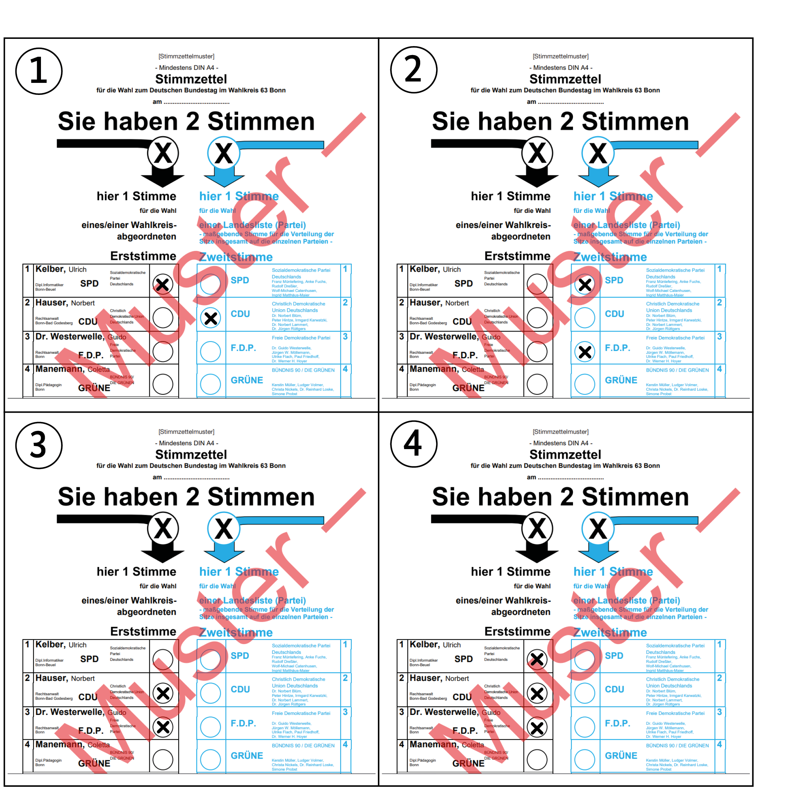
- 1
- 2
- 3
- 4
general-131
PDF page 49
In Deutschland ist eine Bürgermeisterin/ein Bürgermeister ...
- die Leiterin/der Leiter einer Schule.
- die Chefin/der Chef einer Bank.
- das Oberhaupt einer Gemeinde.
- die/der Vorsitzende einer Partei.
general-132
PDF page 49
Viele Menschen in Deutschland arbeiten in ihrer Freizeit ehrenamtlich. Was bedeutet das?
- Sie arbeiten als Soldatinnen/Soldaten.
- Sie arbeiten freiwillig und unbezahlt in Vereinen und Verbänden.
- Sie arbeiten in der Bundesregierung.
- Sie arbeiten in einem Krankenhaus und verdienen dabei Geld.
general-133
PDF page 49
Was ist bei Bundestags- und Landtagswahlen in Deutschland erlaubt?
- Der Ehemann wählt für seine Frau mit.
- Man kann durch Briefwahl seine Stimme abgeben.
- Man kann am Wahltag telefonisch seine Stimme abgeben.
- Kinder ab dem Alter von 14 Jahren dürfen wählen.
general-134
PDF page 50
Man will die Buslinie abschaffen, mit der Sie immer zur Arbeit fahren. Was können Sie machen, um die Buslinie zu erhalten?
- Ich beteilige mich an einer Bürgerinitiative für die Erhaltung der Buslinie oder gründe selber eine Initiative.
- Ich werde Mitglied in einem Sportverein und trainiere Radfahren.
- Ich wende mich an das Finanzamt, weil ich als Steuerzahlerin/Steuerzahler ein Recht auf die Buslinie habe.
- Ich schreibe einen Brief an das Forstamt der Gemeinde.
general-135
PDF page 50
Wen vertreten die Gewerkschaften in Deutschland?
- große Unternehmen
- kleine Unternehmen
- Selbstständige
- Arbeitnehmerinnen und Arbeitnehmer
general-136
PDF page 50
Sie gehen in Deutschland zum Arbeitsgericht bei ...
- falscher Nebenkostenabrechnung.
- ungerechtfertigter Kündigung durch Ihre Chefin/Ihren Chef.
- Problemen mit den Nachbarinnen/Nachbarn.
- Schwierigkeiten nach einem Verkehrsunfall.
general-137
PDF page 51
Welches Gericht ist in Deutschland bei Konflikten in der Arbeitswelt zuständig?
- das Familiengericht
- das Strafgericht
- das Arbeitsgericht
- das Amtsgericht
general-138
PDF page 51
Was kann ich in Deutschland machen, wenn mir meine Arbeitgeberin/mein Arbeitgeber zu Unrecht gekündigt hat?
- weiterarbeiten und freundlich zur Chefin/zum Chef sein
- ein Mahnverfahren gegen die Arbeitgeberin/den Arbeitgeber führen
- Kündigungsschutzklage erheben
- die Arbeitgeberin/den Arbeitgeber bei der Polizei anzeigen
general-139
PDF page 51
Wann kommt es in Deutschland zu einem Prozess vor Gericht? Wenn jemand ...
- zu einer anderen Religion übertritt.
- eine Straftat begangen hat und angeklagt wird.
- eine andere Meinung als die der Regierung vertritt.
- sein Auto falsch geparkt hat und es abgeschleppt wird.
general-140
PDF page 52
Was macht eine Schöffin/ein Schöffe in Deutschland? Sie/Er ...
- entscheidet mit Richterinnen/Richtern über Schuld und Strafe.
- gibt Bürgerinnen/Bürgern rechtlichen Rat.
- stellt Urkunden aus.
- verteidigt die Angeklagte/den Angeklagten.
general-141
PDF page 52
Wer berät in Deutschland Personen bei Rechtsfragen und vertritt sie vor Gericht?
- eine Rechtsanwältin/ein Rechtsanwalt
- eine Richterin/ein Richter
- eine Schöffin/ein Schöffe
- eine Staatsanwältin/ein Staatsanwalt
general-142
PDF page 52
Was ist die Hauptaufgabe einer Richterin/eines Richters in Deutschland? Eine Richterin/ein Richter ...
- vertritt Bürgerinnen und Bürger vor einem Gericht.
- arbeitet an einem Gericht und spricht Urteile.
- ändert Gesetze.
- betreut Jugendliche vor Gericht.
general-143
PDF page 53
Eine Richterin/ein Richter in Deutschland gehört zur ...
- Judikative.
- Exekutive.
- Operative.
- Legislative.
general-144
PDF page 53
Eine Richterin/ein Richter gehört in Deutschland zur ...
- vollziehenden Gewalt.
- rechtsprechenden Gewalt.
- planenden Gewalt.
- gesetzgebenden Gewalt.
general-145
PDF page 53
In Deutschland wird die Staatsgewalt geteilt. Für welche Staatsgewalt arbeitet eine Richterin/ein Richter? Für die ...
- Judikative
- Exekutive
- Presse
- Legislative
general-146
PDF page 54
Wie nennt man in Deutschland ein Verfahren vor einem Gericht?
- Programm
- Prozedur
- Protokoll
- Prozess
general-147
PDF page 54
Was ist die Arbeit einer Richterin/eines Richters in Deutschland?
- Deutschland regieren
- Recht sprechen
- Pläne erstellen
- Gesetze erlassen
general-148
PDF page 54
Was ist eine Aufgabe der Polizei in Deutschland?
- das Land zu verteidigen
- die Bürgerinnen und Bürger abzuhören
- die Gesetze zu beschließen
- die Einhaltung von Gesetzen zu überwachen
general-149
PDF page 55
Was ist ein Beispiel für antisemitisches Verhalten?
- ein jüdisches Fest besuchen
- die israelische Regierung kritisieren
- den Holocaust leugnen
- gegen Juden Fußball spielen.
general-150
PDF page 55
Eine Gerichtsschöffin/ein Gerichtsschöffe in Deutschland ist ...
- die Stellvertreterin/der Stellvertreter des Stadtoberhaupts.
- eine ehrenamtliche Richterin/ein ehrenamtlicher Richter.
- ein Mitglied eines Gemeinderats.
- eine Person, die Jura studiert hat.
general-151
PDF page 55
Wer baute die Mauer in Berlin?
- Großbritannien
- die DDR
- die Bundesrepublik Deutschland
- die USA
general-152
PDF page 56
Wann waren die Nationalsozialisten mit Adolf Hitler in Deutschland an der Macht?
- 1918 bis 1923
- 1932 bis 1950
- 1933 bis 1945
- 1945 bis 1989
general-153
PDF page 56
Was war am 8. Mai 1945?
- Tod Adolf Hitlers
- Beginn des Berliner Mauerbaus
- Wahl von Konrad Adenauer zum Bundeskanzler
- Ende des Zweiten Weltkriegs in Europa
general-154
PDF page 56
Wann war der Zweite Weltkrieg zu Ende?
- 1933
- 1945
- 1949
- 1961
general-155
PDF page 57
Wann waren die Nationalsozialisten in Deutschland an der Macht?
- 1888 bis 1918
- 1921 bis 1934
- 1933 bis 1945
- 1949 bis 1963
general-156
PDF page 57
In welchem Jahr wurde Hitler Reichskanzler?
- 1923
- 1927
- 1933
- 1936
general-157
PDF page 57
Die Nationalsozialisten mit Adolf Hitler errichteten 1933 in Deutschland ...
- eine Diktatur.
- einen demokratischen Staat.
- eine Monarchie.
- ein Fürstentum.
general-158
PDF page 58
Das "Dritte Reich" war eine ...
- Diktatur.
- Demokratie.
- Monarchie.
- Räterepublik.
general-159
PDF page 58
Was gab es in Deutschland nicht während der Zeit des Nationalsozialismus?
- freie Wahlen
- Pressezensur
- willkürliche Verhaftungen
- Verfolgung von Juden
general-160
PDF page 58
Welcher Krieg dauerte von 1939 bis 1945?
- der Erste Weltkrieg
- der Zweite Weltkrieg
- der Vietnamkrieg
- der Golfkrieg
general-161
PDF page 59
Was kennzeichnete den NS-Staat? Eine Politik ...
- des staatlichen Rassismus
- der Meinungsfreiheit
- der allgemeinen Religionsfreiheit
- der Entwicklung der Demokratie
general-162
PDF page 59
Claus Schenk Graf von Stauffenberg wurde bekannt durch ...
- eine Goldmedaille bei den Olympischen Spielen 1936.
- den Bau des Reichstagsgebäudes.
- den Aufbau der Wehrmacht.
- das Attentat auf Hitler am 20. Juli 1944.
general-163
PDF page 59
In welchem Jahr zerstörten die Nationalsozialisten Synagogen und jüdische Geschäfte in Deutschland?
- 1925
- 1930
- 1938
- 1945
general-164
PDF page 60
Was passierte am 9. November 1938 in Deutschland?
- Mit dem Angriff auf Polen beginnt der Zweite Weltkrieg.
- Die Nationalsozialisten verlieren eine Wahl und lösen den Reichstag auf.
- Jüdische Geschäfte und Synagogen werden durch Nationalsozialisten und ihre Anhänger zerstört.
- Hitler wird Reichspräsident und lässt alle Parteien verbieten.
general-165
PDF page 60
Wie hieß der erste Bundeskanzler der Bundesrepublik Deutschland?
- Konrad Adenauer
- Kurt Georg Kiesinger
- Helmut Schmidt
- Willy Brandt
general-166
PDF page 60
Bei welchen Demonstrationen in Deutschland riefen die Menschen "Wir sind das Volk"?
- beim Arbeiteraufstand 1953 in der DDR
- bei den Demonstrationen 1968 in der Bundesrepublik Deutschland
- bei den Anti-Atomkraft-Demonstrationen 1985 in der Bundesrepublik Deutschland
- bei den Montagsdemonstrationen 1989 in der DDR
general-167
PDF page 61
Welche Länder wurden nach dem Zweiten Weltkrieg in Deutschland als "Alliierte Besatzungsmächte" bezeichnet?
- Sowjetunion, Großbritannien, Polen, Schweden
- Frankreich, Sowjetunion, Italien, Japan
- USA, Sowjetunion, Spanien, Portugal
- USA, Sowjetunion, Großbritannien, Frankreich
general-168
PDF page 61
Welches Land war keine "Alliierte Besatzungsmacht" in Deutschland?
- USA
- Sowjetunion
- Frankreich
- Japan
general-169
PDF page 61
Wann wurde die Bundesrepublik Deutschland gegründet?
- 1939
- 1945
- 1949
- 1951
general-170
PDF page 62
Was gab es während der Zeit des Nationalsozialismus in Deutschland?
- das Verbot von Parteien
- das Recht zur freien Entfaltung der Persönlichkeit
- Pressefreiheit
- den Schutz der Menschenwürde
general-171
PDF page 62
Soziale Marktwirtschaft bedeutet, die Wirtschaft ...
- steuert sich allein nach Angebot und Nachfrage.
- wird vom Staat geplant und gesteuert, Angebot und Nachfrage werden nicht berücksichtigt.
- richtet sich nach der Nachfrage im Ausland.
- richtet sich nach Angebot und Nachfrage, aber der Staat sorgt für einen sozialen Ausgleich.
general-172
PDF page 62
In welcher Besatzungszone wurde die DDR gegründet? In der ...
- amerikanischen Besatzungszone
- französischen Besatzungszone
- britischen Besatzungszone
- sowjetischen Besatzungszone
general-173
PDF page 63
Die Bundesrepublik Deutschland ist ein Gründungsmitglied ...
- des Nordatlantikpakts (NATO).
- der Vereinten Nationen (VN).
- der Europäischen Union (EU).
- des Warschauer Pakts.
general-174
PDF page 63
Wann wurde die DDR gegründet?
- 1947
- 1949
- 1953
- 1956
general-175
PDF page 63
Wie viele Besatzungszonen gab es in Deutschland nach dem Zweiten Weltkrieg?
- 3
- 4
- 5
- 6
general-176
PDF page 64
Wie waren die Besatzungszonen Deutschlands nach 1945 verteilt?
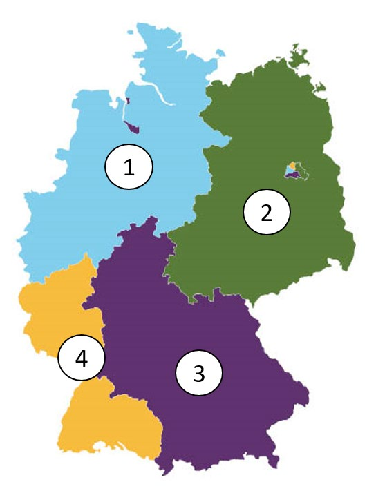
- 1=Großbritannien, 2=Sowjetunion, 3=Frankreich, 4=USA
- 1=Sowjetunion, 2=Großbritannien, 3=USA, 4=Frankreich
- 1=Großbritannien, 2=Sowjetunion, 3=USA, 4=Frankreich
- 1=Großbritannien, 2=USA, 3=Sowjetunion, 4=Frankreich
general-177
PDF page 65
Welche deutsche Stadt wurde nach dem Zweiten Weltkrieg in vier Sektoren aufgeteilt?
- München
- Berlin
- Dresden
- Frankfurt/Oder
general-178
PDF page 65
Vom Juni 1948 bis zum Mai 1949 wurden die Bürgerinnen und Bürger von West-Berlin durch eine Luftbrücke versorgt. Welcher Umstand war dafür verantwortlich?
- Für Frankreich war eine Versorgung der West-Berliner Bevölkerung mit dem Flugzeug kostengünstiger.
- Die amerikanischen Soldatinnen und Soldaten hatten beim Landtransport Angst vor Überfällen.
- Für Großbritannien war die Versorgung über die Luftbrücke schneller.
- Die Sowjetunion unterbrach den gesamten Verkehr auf dem Landwege.
general-179
PDF page 65
Wie endete der Zweite Weltkrieg in Europa offiziell?
- mit dem Tod Adolf Hitlers
- durch die bedingungslose Kapitulation Deutschlands
- mit dem Rückzug der Deutschen aus den besetzten Gebieten
- durch eine Revolution in Deutschland
general-180
PDF page 66
Der erste Bundeskanzler der Bundesrepublik Deutschland war ...
- Ludwig Erhard.
- Willy Brandt.
- Konrad Adenauer.
- Gerhard Schröder.
general-181
PDF page 67
Was wollte Willy Brandt mit seinem Kniefall 1970 im ehemaligen jüdischen Ghetto in Warschau ausdrücken? © Bundesregierung/Engelbert Reineke
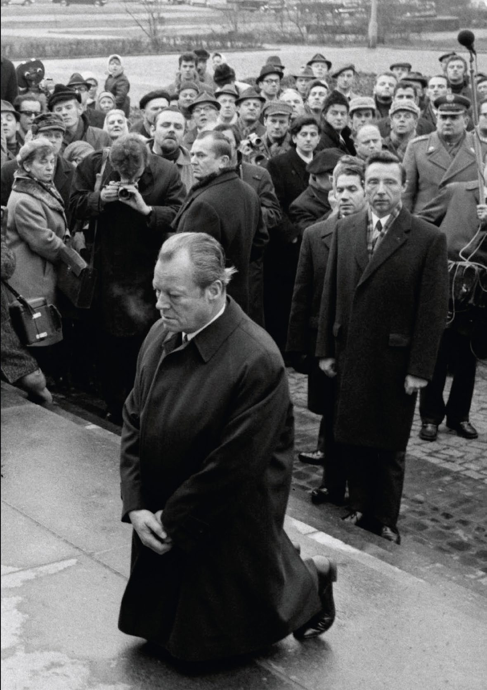
- Er hat sich den ehemaligen Alliierten unterworfen.
- Er bat Polen und die polnischen Juden um Vergebung.
- Er zeigte seine Demut vor dem Warschauer Pakt.
- Er sprach ein Gebet am Grab des Unbekannten Soldaten.
general-182
PDF page 68
Wie heißt das jüdische Gebetshaus?
- Basilika
- Moschee
- Synagoge
- Kirche
general-183
PDF page 68
Wann war in der Bundesrepublik Deutschland das "Wirtschaftswunder"?
- 40er Jahre
- 50er Jahre
- 70er Jahre
- 80er Jahre
general-184
PDF page 68
Auf welcher rechtlichen Grundlage wurde der Staat Israel gegründet?
- eine Resolution der Vereinten Nationen
- ein Beschluss des Zionistenkongresses
- ein Vorschlag der Bundesregierung
- ein Vorschlag der UdSSR
general-185
PDF page 69
Wofür stand der Ausdruck "Eiserner Vorhang"? Für die Abschottung ...
- des Warschauer Pakts gegen den Westen
- Norddeutschlands gegen Süddeutschland
- Nazi-Deutschlands gegen die Alliierten
- Europas gegen die USA
general-186
PDF page 69
Im Jahr 1953 gab es in der DDR einen Aufstand, an den lange Zeit in der Bundesrepublik Deutschland ein Feiertag erinnerte. Wann war das?
- 1. Mai
- 17. Juni
- 20. Juli
- 9. November
general-187
PDF page 70
Welcher deutsche Staat hatte eine schwarz-rot-goldene Flagge mit Hammer, Zirkel und Ährenkranz?
- Preußen
- Bundesrepublik Deutschland
- "Drittes Reich"
- DDR
general-188
PDF page 70
In welchem Jahr wurde die Mauer in Berlin gebaut?
- 1953
- 1956
- 1959
- 1961
general-189
PDF page 71
Wann baute die DDR die Mauer in Berlin?
- 1919
- 1933
- 1961
- 1990
general-190
PDF page 71
Was bedeutet die Abkürzung DDR?
- Dritter Deutscher Rundfunk
- Die Deutsche Republik
- Dritte Deutsche Republik
- Deutsche Demokratische Republik
general-191
PDF page 71
Wann wurde die Mauer in Berlin für alle geöffnet?
- 1987
- 1989
- 1992
- 1995
general-192
PDF page 72
Welches heutige deutsche Bundesland gehörte früher zum Gebiet der DDR?
- Brandenburg
- Bayern
- Saarland
- Hessen
general-193
PDF page 72
Von 1961 bis 1989 war Berlin ...
- ohne Bürgermeister.
- ein eigener Staat.
- durch eine Mauer geteilt.
- nur mit dem Flugzeug erreichbar.
general-194
PDF page 72
Am 3. Oktober feiert man in Deutschland den Tag der Deutschen ...
- Einheit.
- Nation.
- Bundesländer.
- Städte.
general-195
PDF page 73
Welches heutige deutsche Bundesland gehörte früher zum Gebiet der DDR?
- Hessen
- Sachsen-Anhalt
- Nordrhein-Westfalen
- Saarland
general-196
PDF page 73
Warum nennt man die Zeit im Herbst 1989 in der DDR "Die Wende"? In dieser Zeit veränderte sich die DDR politisch ...
- von einer Diktatur zur Demokratie.
- von einer liberalen Marktwirtschaft zum Sozialismus.
- von einer Monarchie zur Sozialdemokratie.
- von einem religiösen Staat zu einem kommunistischen Staat.
general-197
PDF page 73
Welches heutige deutsche Bundesland gehörte früher zum Gebiet der DDR?
- Thüringen
- Hessen
- Bayern
- Bremen
general-198
PDF page 74
Welches heutige deutsche Bundesland gehörte früher zum Gebiet der DDR?
- Bayern
- Niedersachsen
- Sachsen
- Baden-Württemberg
general-199
PDF page 74
Mit der Abkürzung "Stasi" meinte man in der DDR ...
- das Parlament.
- das Ministerium für Staatssicherheit.
- eine regierende Partei.
- das Ministerium für Volksbildung.
general-200
PDF page 74
Welches heutige deutsche Bundesland gehörte früher zum Gebiet der DDR?
- Hessen
- Schleswig-Holstein
- Mecklenburg-Vorpommern
- Saarland
general-201
PDF page 75
Welche der folgenden Auflistungen enthält nur Bundesländer, die zum Gebiet der früheren DDR gehörten?
- Niedersachsen, Nordrhein-Westfalen, Hessen, Schleswig-Holstein, Brandenburg
- Mecklenburg-Vorpommern, Brandenburg, Sachsen, Sachsen-Anhalt, Thüringen
- Bayern, Baden-Württemberg, Rheinland-Pfalz, Thüringen, Sachsen
- Sachsen, Thüringen, Hessen, Niedersachen, Brandenburg
general-202
PDF page 75
Zu wem gehörte die DDR im "Kalten Krieg"?
- zu den Westmächten
- zum Warschauer Pakt
- zur NATO
- zu den blockfreien Staaten
general-203
PDF page 75
Wie hieß das Wirtschaftssystem der DDR?
- Marktwirtschaft
- Planwirtschaft
- Angebot und Nachfrage
- Kapitalismus
general-204
PDF page 76
Wie wurden die Bundesrepublik Deutschland und die DDR zu einem Staat?
- Die Bundesrepublik hat die DDR besetzt.
- Die heutigen fünf östlichen Bundesländer sind der Bundesrepublik Deutschland beigetreten.
- Die westlichen Bundesländer sind der DDR beigetreten.
- Die DDR hat die Bundesrepublik Deutschland besetzt.
general-205
PDF page 76
Mit dem Beitritt der DDR zur Bundesrepublik Deutschland gehören die neuen Bundesländer nun auch ...
- zur Europäischen Union.
- zum Warschauer Pakt.
- zur OPEC.
- zur Europäischen Verteidigungsgemeinschaft.
general-206
PDF page 76
Woran erinnern die sogenannten „Stolpersteine“ in Deutschland?
- an berühmte deutsche Politikerinnen und Politiker
- an die Opfer des Nationalsozialismus
- an Verkehrstote
- an bekannte jüdische Musiker
general-207
PDF page 77
In welchem Militärbündnis war die DDR Mitglied?
- in der NATO
- im Rheinbund
- im Warschauer Pakt
- im Europabündnis
general-208
PDF page 77
Was war die "Stasi"?
- der Geheimdienst im "Dritten Reich"
- eine berühmte deutsche Gedenkstätte
- der Geheimdienst der DDR
- ein deutscher Sportverein während des Zweiten Weltkrieges
general-209
PDF page 78
Welches war das Wappen der Deutschen Demokratischen Republik?


- Bild 1
- Bild 2
- Bild 3
- Bild 4
general-210
PDF page 78
Was ereignete sich am 17. Juni 1953 in der DDR?
- der feierliche Beitritt zum Warschauer Pakt
- landesweite Streiks und ein Volksaufstand
- der 1. SED-Parteitag
- der erste Besuch Fidel Castros
general-211
PDF page 79
Welcher Politiker steht für die "Ostverträge"?
- Helmut Kohl
- Willy Brandt
- Michail Gorbatschow
- Ludwig Erhard
general-212
PDF page 79
Wie heißt Deutschland mit vollem Namen?
- Bundesstaat Deutschland
- Bundesländer Deutschland
- Bundesrepublik Deutschland
- Bundesbezirk Deutschland
general-213
PDF page 79
Wie viele Einwohner hat Deutschland?
- 70 Millionen
- 78 Millionen
- 84 Millionen
- 90 Millionen
general-214
PDF page 80
Welche Farben hat die deutsche Flagge?
- schwarz-rot-gold
- rot-weiß-schwarz
- schwarz-rot-grün
- schwarz-gelb-rot
general-215
PDF page 80
Wer wird als "Kanzler der Deutschen Einheit" bezeichnet?
- Gerhard Schröder
- Helmut Kohl
- Konrad Adenauer
- Helmut Schmidt
general-216
PDF page 81
Welches Symbol ist im Plenarsaal des Deutschen Bundestages zu sehen? © Deutscher Bundestag/Janine Schmitz
- der Bundesadler
- die Fahne der Stadt Berlin
- der Reichsadler
- die Reichskrone
general-217
PDF page 81
In welchem Zeitraum gab es die Deutsche Demokratische Republik (DDR)?
- 1919 bis 1927
- 1933 bis 1945
- 1945 bis 1961
- 1949 bis 1990
general-218
PDF page 82
Wie viele Bundesländer kamen bei der Wiedervereinigung 1990 zur Bundesrepublik Deutschland hinzu?
- 4
- 5
- 6
- 7
general-219
PDF page 82
Die Bundesrepublik Deutschland hat die Grenzen von heute seit ...
- 1933
- 1949
- 1971
- 1990
general-220
PDF page 82
Der 27. Januar ist in Deutschland ein offizieller Gedenktag. Woran erinnert dieser Tag?
- an das Ende des Zweiten Weltkrieges
- an die Verabschiedung des Grundgesetzes
- an die Wiedervereinigung Deutschlands
- an die Opfer des Nationalsozialismus (Tag der Befreiung des Vernichtungslagers Auschwitz)
general-221
PDF page 83
Deutschland ist Mitglied des Schengener Abkommens. Was bedeutet das?
- Deutsche können in viele Länder Europas ohne Passkontrolle reisen.
- Alle Menschen können ohne Personenkontrolle in Deutschland einreisen.
- Deutsche können ohne Passkontrolle in jedes Land reisen.
- Deutsche können in jedem Land mit dem Euro bezahlen.
general-222
PDF page 83
Welches Land ist ein Nachbarland von Deutschland?
- Ungarn
- Portugal
- Spanien
- Schweiz
general-223
PDF page 83
Welches Land ist ein Nachbarland von Deutschland?
- Rumänien
- Bulgarien
- Polen
- Griechenland
general-224
PDF page 84
Was bedeutet die Abkürzung EU?
- Europäische Unternehmen
- Europäische Union
- Einheitliche Union
- Euro Union
general-225
PDF page 84
In welchem anderen Land gibt es eine große deutschsprachige Bevölkerung?
- Tschechien
- Norwegen
- Spanien
- Österreich
general-226
PDF page 85
Welche ist die Flagge der Europäischen Union?
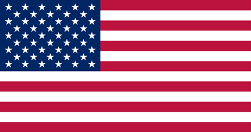

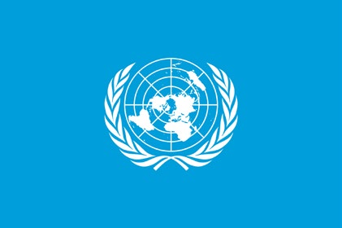
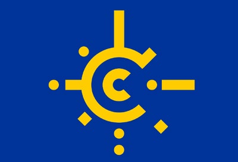
- Bild 1
- Bild 2
- Bild 3
- Bild 4
general-227
PDF page 85
Welches Land ist ein Nachbarland von Deutschland?
- Finnland
- Dänemark
- Norwegen
- Schweden
general-228
PDF page 85
Wie wird der Beitritt der DDR zur Bundesrepublik Deutschland im Jahr 1990 allgemein genannt?
- NATO-Osterweiterung
- EU-Osterweiterung
- Deutsche Wiedervereinigung
- Europäische Gemeinschaft
general-229
PDF page 86
Welches Land ist ein Nachbarland von Deutschland?
- Spanien
- Bulgarien
- Norwegen
- Luxemburg
general-230
PDF page 86
Das Europäische Parlament wird regelmäßig gewählt, nämlich alle ...
- 5 Jahre.
- 6 Jahre.
- 7 Jahre.
- 8 Jahre.
general-231
PDF page 86
Was bedeutet der Begriff "europäische Integration"?
- Damit sind amerikanische Einwanderinnen und Einwanderer in Europa gemeint.
- Der Begriff meint den Einwanderungsstopp nach Europa.
- Damit sind europäische Auswanderinnen und Auswanderer in den USA gemeint.
- Der Begriff meint den Zusammenschluss europäischer Staaten zur EU.
general-232
PDF page 87
Wer wird bei der Europawahl gewählt?
- die Europäische Kommission
- die Länder, die in die EU eintreten dürfen
- die Abgeordneten des Europäischen Parlaments
- die europäische Verfassung
general-233
PDF page 87
Welches Land ist ein Nachbarland von Deutschland?
- Tschechien
- Bulgarien
- Griechenland
- Portugal
general-234
PDF page 87
Wo ist ein Sitz des Europäischen Parlaments?
- London
- Paris
- Berlin
- Straßburg
general-235
PDF page 88
Der damalige französische Staatspräsident François Mitterrand und der damalige deutsche Bundeskanzler Helmut Kohl gedenken in Verdun gemeinsam der Toten beider Weltkriege. Welches Ziel der Europäischen Union wird bei diesem Treffen deutlich? © Bundesregierung/Richard Schulze-Vorberg
- Freundschaft zwischen England und Deutschland
- Reisefreiheit in alle Länder der EU
- Frieden und Sicherheit in den Ländern der EU
- einheitliche Feiertage in den Ländern der EU
general-236
PDF page 89
Wie viele Mitgliedstaaten hat die EU heute?
- 21
- 23
- 25
- 27
general-237
PDF page 89
2007 wurde das 50-jährige Jubiläum der "Römischen Verträge" gefeiert. Was war der Inhalt der Verträge?
- Beitritt Deutschlands zur NATO
- Gründung der Europäischen Wirtschaftsgemeinschaft (EWG)
- Verpflichtung Deutschlands zu Reparationsleistungen
- Festlegung der Oder-Neiße-Linie als Ostgrenze
general-238
PDF page 89
An welchen Orten arbeitet das Europäische Parlament?
- Paris, London und Den Haag
- Straßburg, Luxemburg und Brüssel
- Rom, Bern und Wien
- Bonn, Zürich und Mailand
general-239
PDF page 90
Durch welche Verträge schloss sich die Bundesrepublik Deutschland mit anderen Staaten zur Europäischen Wirtschaftsgemeinschaft zusammen?
- durch die "Hamburger Verträge"
- durch die "Römischen Verträge"
- durch die "Pariser Verträge"
- durch die "Londoner Verträge"
general-240
PDF page 90
Seit wann bezahlt man in Deutschland mit dem Euro in bar?
- 1995
- 1998
- 2002
- 2005
general-241
PDF page 90
Frau Seger bekommt ein Kind. Was muss sie tun, um Elterngeld zu erhalten?
- Sie muss an ihre Krankenkasse schreiben.
- Sie muss einen Antrag bei der Elterngeldstelle stellen.
- Sie muss nichts tun, denn sie bekommt automatisch Elterngeld.
- Sie muss das Arbeitsamt um Erlaubnis bitten.
general-242
PDF page 91
Wer entscheidet, ob ein Kind in Deutschland in den Kindergarten geht?
- der Staat
- die Bundesländer
- die Eltern/die Erziehungsberechtigten
- die Schulen
general-243
PDF page 91
Maik und Sybille wollen mit Freunden an ihrem deutschen Wohnort eine Demonstration auf der Straße abhalten. Was müssen sie vorher tun?
- Sie müssen die Demonstration anmelden.
- Sie müssen nichts tun. Man darf in Deutschland jederzeit überall demonstrieren.
- Sie können gar nichts tun, denn Demonstrationen sind in Deutschland grundsätzlich verboten.
- Maik und Sybille müssen einen neuen Verein gründen, weil nur Vereine demonstrieren dürfen.
general-244
PDF page 91
Welchen Schulabschluss braucht man normalerweise, um an einer Universität in Deutschland ein Studium zu beginnen?
- das Abitur
- ein Diplom
- die Prokura
- eine Gesellenprüfung
general-245
PDF page 92
Wer darf in Deutschland nicht als Paar zusammenleben?
- Hans (20 Jahre) und Marie (19 Jahre)
- Tom (20 Jahre) und Klaus (45 Jahre)
- Sofie (35 Jahre) und Lisa (40 Jahre)
- Anne (13 Jahre) und Tim (25 Jahre)
general-246
PDF page 92
Ab welchem Alter ist man in Deutschland volljährig?
- 16
- 18
- 19
- 21
general-247
PDF page 92
Eine Frau ist schwanger. Sie ist kurz vor und nach der Geburt ihres Kindes vom Gesetz besonders beschützt. Wie heißt dieser Schutz?
- Elternzeit
- Mutterschutz
- Geburtsvorbereitung
- Wochenbett
general-248
PDF page 93
Die Erziehung der Kinder ist in Deutschland vor allem Aufgabe ...
- des Staates.
- der Eltern.
- der Großeltern.
- der Schulen.
general-249
PDF page 93
Wer ist in Deutschland hauptsächlich verantwortlich für die Kindererziehung?
- der Staat
- die Eltern
- die Verwandten
- die Schulen
general-250
PDF page 93
In Deutschland hat man die besten Chancen auf einen gut bezahlten Arbeitsplatz, wenn man ...
- katholisch ist.
- gut ausgebildet ist.
- eine Frau ist.
- Mitglied einer Partei ist.
general-251
PDF page 94
Wenn man in Deutschland ein Kind schlägt, ...
- geht das niemanden etwas an.
- geht das nur die Familie etwas an.
- kann man dafür nicht bestraft werden.
- kann man dafür bestraft werden.
general-252
PDF page 94
In Deutschland ...
- darf man zur gleichen Zeit nur mit einer Partnerin/einem Partner verheiratet sein.
- kann man mehrere Ehepartnerinnen/Ehepartner gleichzeitig haben.
- darf man nicht wieder heiraten, wenn man einmal verheiratet war.
- darf eine Frau nicht wieder heiraten, wenn ihr Mann gestorben ist.
general-253
PDF page 94
Wo müssen Sie sich anmelden, wenn Sie in Deutschland umziehen?
- beim Einwohnermeldeamt
- beim Standesamt
- beim Ordnungsamt
- beim Gewerbeamt
general-254
PDF page 95
In Deutschland dürfen Ehepaare sich scheiden lassen. Meistens müssen sie dazu das "Trennungsjahr" einhalten. Was bedeutet das?
- Der Scheidungsprozess dauert ein Jahr.
- Die Ehegatten sind ein Jahr verheiratet, dann ist die Scheidung möglich.
- Das Besuchsrecht für die Kinder gilt ein Jahr.
- Die Ehegatten führen mindestens ein Jahr getrennt ihr eigenes Leben. Danach ist die Scheidung möglich.
general-255
PDF page 95
Bei Erziehungsproblemen können Eltern in Deutschland Hilfe erhalten vom ...
- Ordnungsamt.
- Schulamt.
- Jugendamt.
- Gesundheitsamt.
general-256
PDF page 95
Ein Ehepaar möchte in Deutschland ein Restaurant eröffnen. Was braucht es dazu unbedingt?
- eine Erlaubnis der Polizei
- eine Genehmigung einer Partei
- eine Genehmigung des Einwohnermeldeamts
- eine Gaststättenerlaubnis von der zuständigen Behörde
general-257
PDF page 96
Eine erwachsene Frau möchte in Deutschland das Abitur nachholen. Das kann sie an ...
- einer Hochschule.
- einem Abendgymnasium.
- einer Hauptschule.
- einer Privatuniversität.
general-258
PDF page 96
Was darf das Jugendamt in Deutschland?
- Es entscheidet, welche Schule das Kind besucht.
- Es kann ein Kind, das geschlagen wird oder hungern muss, aus der Familie nehmen.
- Es bezahlt das Kindergeld an die Eltern.
- Es kontrolliert, ob das Kind einen Kindergarten besucht.
general-259
PDF page 96
Das Berufsinformationszentrum BIZ bei der Bundesagentur für Arbeit in Deutschland hilft bei der ...
- Rentenberechnung.
- Lehrstellensuche.
- Steuererklärung.
- Krankenversicherung.
general-260
PDF page 97
In Deutschland hat ein Kind in der Schule ...
- Recht auf unbegrenzte Freizeit.
- Wahlfreiheit für alle Fächer.
- Anspruch auf Schulgeld.
- Anwesenheitspflicht.
general-261
PDF page 97
Ein Mann möchte mit 30 Jahren in Deutschland sein Abitur nachholen. Wo kann er das tun? An ...
- einer Hochschule.
- einem Abendgymnasium.
- einer Hauptschule.
- einer Privatuniversität.
general-262
PDF page 97
Was bedeutet in Deutschland der Grundsatz der Gleichbehandlung?
- Niemand darf z.B. wegen einer Behinderung benachteiligt werden.
- Man darf andere Personen benachteiligen, wenn ausreichende persönliche Gründe hierfür vorliegen.
- Niemand darf gegen Personen klagen, wenn sie benachteiligt wurden.
- Es ist für alle Gesetz, benachteiligten Gruppen jährlich Geld zu spenden.
general-263
PDF page 98
In Deutschland sind Jugendliche ab 14 Jahren strafmündig. Das bedeutet: Jugendliche, die 14 Jahre und älter sind und gegen Strafgesetze verstoßen, ...
- werden bestraft.
- werden wie Erwachsene behandelt.
- teilen die Strafe mit ihren Eltern.
- werden nicht bestraft.
general-264
PDF page 98
Zu welchem Fest tragen Menschen in Deutschland bunte Kostüme und Masken?
- am Rosenmontag
- am Maifeiertag
- beim Oktoberfest
- an Pfingsten
general-265
PDF page 98
Wohin muss man in Deutschland zuerst gehen, wenn man heiraten möchte?
- zum Einwohnermeldeamt
- zum Ordnungsamt
- zur Agentur für Arbeit
- zum Standesamt
general-266
PDF page 99
Wann beginnt die gesetzliche Nachtruhe in Deutschland?
- wenn die Sonne untergeht
- wenn die Nachbarn schlafen gehen
- um 0 Uhr, Mitternacht
- um 22 Uhr
general-267
PDF page 99
Eine junge Frau in Deutschland, 22 Jahre alt, lebt mit ihrem Freund zusammen. Die Eltern der Frau finden das nicht gut, weil ihnen der Freund nicht gefällt. Was können die Eltern tun?
- Sie müssen die Entscheidung der volljährigen Tochter respektieren.
- Sie haben das Recht, die Tochter in die elterliche Wohnung zurückzuholen.
- Sie können zur Polizei gehen und die Tochter anzeigen.
- Sie suchen einen anderen Mann für die Tochter.
general-268
PDF page 99
Eine junge Frau will den Führerschein machen. Sie hat Angst vor der Prüfung, weil ihre Muttersprache nicht Deutsch ist. Was ist richtig?
- Sie muss mindestens zehn Jahre in Deutschland leben, bevor sie den Führerschein machen kann.
- Wenn sie kein Deutsch kann, darf sie keinen Führerschein haben.
- Sie muss den Führerschein in dem Land machen, in dem man ihre Sprache spricht.
- Sie kann die Theorie-Prüfung vielleicht in ihrer Muttersprache machen. Es gibt mehr als zehn Sprachen zur Auswahl.
general-269
PDF page 100
In Deutschland haben Kinder ab dem Alter von drei Jahren bis zur Ersteinschulung einen Anspruch auf ...
- monatliches Taschengeld.
- einen Platz in einem Sportverein.
- einen Kindergartenplatz.
- einen Ferienpass.
general-270
PDF page 100
Die Volkshochschule in Deutschland ist eine Einrichtung ...
- für den Religionsunterricht.
- nur für Jugendliche.
- zur Weiterbildung.
- nur für Rentnerinnen und Rentner.
general-271
PDF page 100
Was ist in Deutschland ein Brauch zu Weihnachten?
- bunte Eier verstecken
- einen Tannenbaum schmücken
- sich mit Masken und Kostümen verkleiden
- Kürbisse vor die Tür stellen
general-272
PDF page 101
Welche Lebensform ist in Deutschland nicht erlaubt?
- Mann und Frau sind geschieden und leben mit neuen Partnern zusammen.
- Zwei Frauen leben zusammen.
- Ein alleinerziehender Vater lebt mit seinen zwei Kindern zusammen.
- Ein Mann ist mit zwei Frauen zur selben Zeit verheiratet.
general-273
PDF page 101
Bei Erziehungsproblemen gehen Sie in Deutschland ...
- zur Ärztin/zum Arzt.
- zum Gesundheitsamt.
- zum Einwohnermeldeamt.
- zum Jugendamt.
general-274
PDF page 101
Sie haben in Deutschland absichtlich einen Brief geöffnet, der an eine andere Person adressiert ist. Was haben Sie nicht beachtet?
- das Schweigerecht
- das Briefgeheimnis
- die Schweigepflicht
- die Meinungsfreiheit
general-275
PDF page 102
Was braucht man in Deutschland für eine Ehescheidung?
- die Einwilligung der Eltern
- ein Attest einer Ärztin/eines Arztes
- die Einwilligung der Kinder
- die Unterstützung einer Anwältin/eines Anwalts
general-276
PDF page 102
Was sollten Sie tun, wenn Sie von Ihrer Ansprechpartnerin/Ihrem Ansprechpartner in einer deutschen Behörde schlecht behandelt werden?
- Ich kann nichts tun.
- Ich muss mir diese Behandlung gefallen lassen.
- Ich drohe der Person.
- Ich kann mich bei der Behördenleiterin/beim Behördenleiter beschweren.
general-277
PDF page 102
Eine Frau, die ein zweijähriges Kind hat, bewirbt sich in Deutschland um eine Stelle. Was ist ein Beispiel für Diskriminierung? Sie bekommt die Stelle nur deshalb nicht, weil sie ...
- kein Englisch spricht.
- zu hohe Gehaltsvorstellungen hat.
- keine Erfahrungen in diesem Beruf hat.
- Mutter ist.
general-278
PDF page 103
Ein Mann im Rollstuhl hat sich auf eine Stelle als Buchhalter beworben. Was ist ein Beispiel für Diskriminierung? Er bekommt die Stelle nur deshalb nicht, weil er ...
- im Rollstuhl sitzt.
- keine Erfahrung hat.
- zu hohe Gehaltsvorstellungen hat.
- kein Englisch spricht.
general-279
PDF page 103
In den meisten Mietshäusern in Deutschland gibt es eine "Hausordnung". Was steht in einer solchen "Hausordnung"? Sie nennt ...
- Regeln für die Benutzung öffentlicher Verkehrsmittel.
- alle Mieterinnen und Mieter im Haus.
- Regeln, an die sich alle Bewohnerinnen und Bewohner halten müssen.
- die Adresse des nächsten Ordnungsamtes.
general-280
PDF page 103
Wenn Sie sich in Deutschland gegen einen falschen Steuerbescheid wehren wollen, müssen Sie ...
- nichts machen.
- den Bescheid wegwerfen.
- Einspruch einlegen.
- warten, bis ein anderer Bescheid kommt.
general-281
PDF page 104
Zwei Freunde wollen in ein öffentliches Schwimmbad in Deutschland. Beide haben eine dunkle Hautfarbe und werden deshalb nicht hineingelassen. Welches Recht wird in dieser Situation verletzt? Das Recht auf ...
- Meinungsfreiheit
- Gleichbehandlung
- Versammlungsfreiheit
- Freizügigkeit
general-282
PDF page 104
Welches Ehrenamt müssen deutsche Staatsbürgerinnen und Staatsbürger übernehmen, wenn sie dazu aufgefordert werden?
- Vereinstrainerin/Vereinstrainer
- Wahlhelferin/Wahlhelfer
- Bibliotheksaufsicht
- Lehrerin/Lehrer
general-283
PDF page 104
Was tun Sie, wenn Sie eine falsche Rechnung von einer deutschen Behörde bekommen?
- Ich lasse die Rechnung liegen.
- Ich lege Widerspruch bei der Behörde ein.
- Ich schicke die Rechnung an die Behörde zurück.
- Ich gehe mit der Rechnung zum Finanzamt.
general-284
PDF page 105
Was man für die Arbeit können muss, ändert sich in Zukunft sehr schnell. Was kann man tun?
- Es ist egal, was man lernt.
- Erwachsene müssen auch nach der Ausbildung immer weiter lernen.
- Kinder lernen in der Schule alles, was im Beruf wichtig ist. Nach der Schule muss man nicht weiter lernen.
- Alle müssen früher aufhören zu arbeiten, weil sich alles ändert.
general-285
PDF page 105
Frau Frost arbeitet als fest angestellte Mitarbeiterin in einem Büro. Was muss sie nicht von ihrem Gehalt bezahlen?
- Lohnsteuer
- Beiträge zur Arbeitslosenversicherung
- Beiträge zur Renten- und Krankenversicherung
- Umsatzsteuer
general-286
PDF page 105
Welche Organisation in einer Firma hilft den Arbeitnehmerinnen und Arbeitnehmern bei Problemen mit der Arbeitgeberin/dem Arbeitgeber?
- der Betriebsrat
- die Betriebsprüferin/der Betriebsprüfer
- die Betriebsgruppe
- das Betriebsmanagement
general-287
PDF page 106
Sie möchten bei einer Firma in Deutschland ihr Arbeitsverhältnis beenden. Was müssen Sie beachten?
- die Gehaltszahlungen
- die Arbeitszeit
- die Kündigungsfrist
- die Versicherungspflicht
general-288
PDF page 106
Woraus begründet sich Deutschlands besondere Verantwortung für Israel?
- aus der Mitgliedschaft in der Europäischen Union (EU)
- aus den nationalsozialistischen Verbrechen gegen Juden
- aus dem Grundgesetz der Bundesrepublik Deutschland
- aus der christlichen Tradition
general-289
PDF page 107
Ein Mann mit dunkler Hautfarbe bewirbt sich um eine Stelle als Kellner in einem Restaurant in Deutschland. Was ist ein Beispiel für Diskriminierung? Er bekommt die Stelle nur deshalb nicht, weil ...
- seine Deutschkenntnisse zu gering sind.
- er zu hohe Gehaltsvorstellungen hat.
- er eine dunkle Haut hat.
- er keine Erfahrungen im Beruf hat.
general-290
PDF page 108
Sie haben in Deutschland einen Fernseher gekauft. Zu Hause packen Sie den Fernseher aus, doch er funktioniert nicht. Der Fernseher ist kaputt. Was können Sie machen?
- eine Anzeige schreiben
- den Fernseher reklamieren
- das Gerät ungefragt austauschen
- die Garantie verlängern
general-291
PDF page 108
Warum muss man in Deutschland bei der Steuererklärung aufschreiben, ob man zu einer Kirche gehört oder nicht? Weil ...
- es eine Kirchensteuer gibt, die an die Einkommen- und Lohnsteuer geknüpft ist.
- das für die Statistik in Deutschland wichtig ist.
- man mehr Steuern zahlen muss, wenn man nicht zu einer Kirche gehört.
- die Kirche für die Steuererklärung verantwortlich ist.
general-292
PDF page 108
Die Menschen in Deutschland leben nach dem Grundsatz der religiösen Toleranz. Was bedeutet das?
- Es dürfen keine Moscheen gebaut werden.
- Alle Menschen glauben an Gott.
- Jeder kann glauben, was er möchte.
- Der Staat entscheidet, an welchen Gott die Menschen glauben.
general-293
PDF page 109
Was ist in Deutschland ein Brauch zu Ostern?
- Kürbisse vor die Tür stellen
- einen Tannenbaum schmücken
- Eier bemalen
- Raketen in die Luft schießen
general-294
PDF page 109
Pfingsten ist ein ...
- christlicher Feiertag.
- deutscher Gedenktag.
- internationaler Trauertag.
- bayerischer Brauch.
general-295
PDF page 109
Welche Religion hat die europäische und deutsche Kultur geprägt?
- der Hinduismus
- das Christentum
- der Buddhismus
- der Islam
general-296
PDF page 110
In Deutschland nennt man die letzten vier Wochen vor Weihnachten ...
- den Buß- und Bettag.
- das Erntedankfest.
- die Adventszeit.
- Allerheiligen.
general-297
PDF page 110
Aus welchem Land sind die meisten Migrantinnen und Migranten nach Deutschland gekommen?
- Italien
- Polen
- Marokko
- Türkei
general-298
PDF page 110
In der DDR lebten vor allem Migrantinnen und Migranten aus ...
- Vietnam, Polen, Mosambik.
- Frankreich, Rumänien, Somalia.
- Chile, Ungarn, Simbabwe.
- Nordkorea, Mexiko, Ägypten.
general-299
PDF page 111
Ausländische Arbeitnehmerinnen und Arbeitnehmer, die in den 50er und 60er Jahren von der Bundesrepublik Deutschland angeworben wurden, nannte man ...
- Schwarzarbeiterinnen/Schwarzarbeiter.
- Gastarbeiterinnen/Gastarbeiter.
- Zeitarbeiterinnen/Zeitarbeiter.
- Schichtarbeiterinnen/Schichtarbeiter.
general-300
PDF page 111
Aus welchem Land kamen die ersten Gastarbeiterinnen und Gastarbeiter in die Bundesrepublik Deutschland?
- Italien
- Spanien
- Portugal
- Türkei
BW-01
PDF page 112
Welches Wappen gehört zum Bundesland Baden-Württemberg?
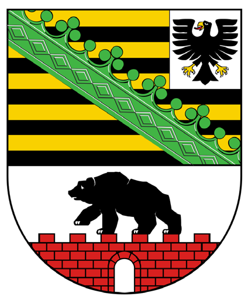

- Bild 1
- Bild 2
- Bild 3
- Bild 4
BW-02
PDF page 112
Welches ist ein Landkreis in Baden-Württemberg?
- Mecklenburgische Seenplatte
- Neckar-Odenwald-Kreis
- Nordfriesland
- Altötting
BW-03
PDF page 113
Für wie viele Jahre wird der Landtag in Baden-Württemberg gewählt?
- 3
- 4
- 5
- 6
BW-04
PDF page 113
Ab welchem Alter darf man in Baden-Württemberg bei Kommunalwahlen wählen?
- 14
- 16
- 18
- 20
BW-05
PDF page 113
Welche Farben hat die Landesflagge von Baden-Württemberg?
- blau-weiß-rot
- schwarz-gold
- weiß-blau
- grün-weiß-rot
BW-06
PDF page 114
Wo können Sie sich in Baden-Württemberg über politische Themen informieren?
- beim Ordnungsamt der Gemeinde
- bei der Verbraucherzentrale
- bei der Landeszentrale für politische Bildung
- bei den Kirchen
BW-07
PDF page 114
Die Landeshauptstadt von Baden-Württemberg heißt ...
- Heidelberg.
- Stuttgart.
- Karlsruhe.
- Mannheim.
BW-08
PDF page 115
Welches Bundesland ist Baden-Württemberg?
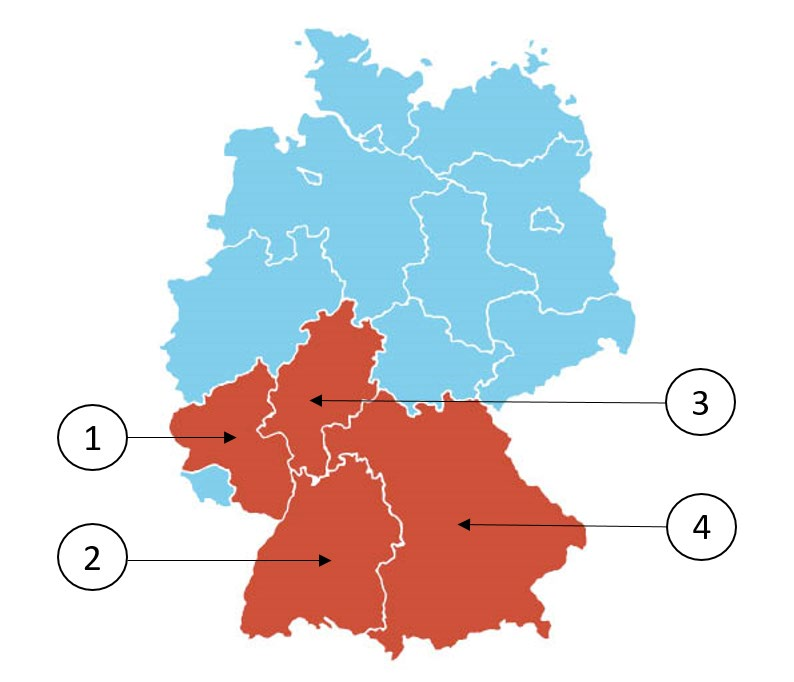
- 1
- 2
- 3
- 4
BW-09
PDF page 116
Wie nennt man die Regierungschefin/den Regierungschef in Baden-Württemberg?
- Erste Ministerin/Erster Minister
- Premierministerin/Premierminister
- Bürgermeisterin/Bürgermeister
- Ministerpräsidentin/Ministerpräsident
BW-10
PDF page 116
Welche Ministerin/welchen Minister hat Baden-Württemberg nicht?
- Finanzministerin/Finanzminister
- Justizministerin/Justizminister
- Innenministerin/Innenminister
- Außenministerin/Außenminister
BY-01
PDF page 117
Welches Wappen gehört zum Freistaat Bayern?


- Bild 1
- Bild 2
- Bild 3
- Bild 4
BY-02
PDF page 117
Welches ist ein Landkreis in Bayern?
- Prignitz
- Rhein-Sieg-Kreis
- Nordfriesland
- Altötting
BY-03
PDF page 118
Für wie viele Jahre wird der Landtag in Bayern gewählt?
- 3
- 4
- 5
- 6
BY-04
PDF page 118
Ab welchem Alter darf man in Bayern bei Kommunalwahlen wählen?
- 14
- 16
- 18
- 20
BY-05
PDF page 118
Welche Farben hat die Landesflagge von Bayern?
- blau-weiß-rot
- weiß-blau
- grün-weiß-rot
- schwarz-gelb
BY-06
PDF page 119
Wo können Sie sich in Bayern über politische Themen informieren?
- beim Ordnungsamt der Gemeinde
- bei der Landeszentrale für politische Bildung
- bei der Verbraucherzentrale
- bei den Kirchen
BY-07
PDF page 119
Die Landeshauptstadt von Bayern heißt ...
- Ingolstadt.
- Regensburg.
- Nürnberg.
- München.
BY-08
PDF page 120
Welches Bundesland ist Bayern?
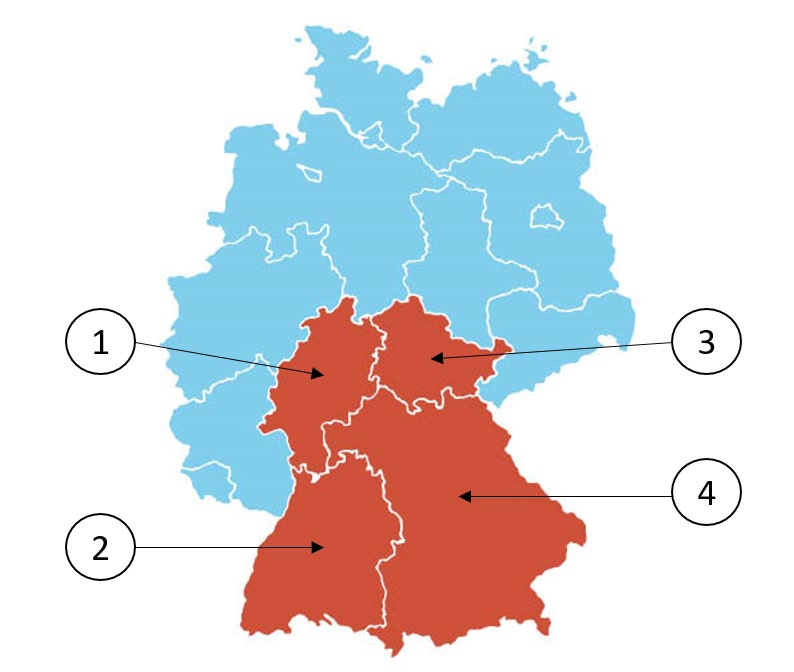
- 1
- 2
- 3
- 4
BY-09
PDF page 121
Wie nennt man die Regierungschefin/den Regierungschef in Bayern?
- Erste Ministerin/Erster Minister
- Premierministerin/Premierminister
- Bürgermeisterin/Bürgermeister
- Ministerpräsidentin/Ministerpräsident
BY-10
PDF page 121
Welche Ministerin/welchen Minister hat Bayern nicht?
- Justizministerin/Justizminister
- Außenministerin/Außenminister
- Finanzministerin/Finanzminister
- Innenministerin/Innenminister
BE-01
PDF page 122
Welches Wappen gehört zum Bundesland Berlin?


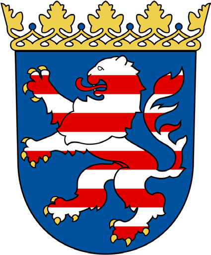
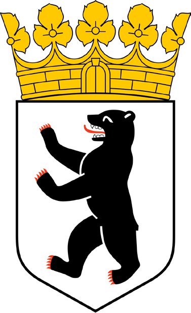
- Bild 1
- Bild 2
- Bild 3
- Bild 4
BE-02
PDF page 122
Welches ist ein Bezirk von Berlin?
- Altona
- Prignitz
- Pankow
- Mecklenburgische Seenplatte
BE-03
PDF page 123
Für wie viele Jahre wird das Landesparlament in Berlin gewählt?
- 3
- 4
- 5
- 6
BE-04
PDF page 123
Ab welchem Alter darf man in Berlin bei Kommunalwahlen (Wahl der Bezirksverordnetenversammlung) wählen?
- 14
- 16
- 18
- 20
BE-05
PDF page 123
Welche Farben hat die Landesflagge von Berlin?
- blau-weiß-rot
- weiß-rot
- grün-weiß-rot
- schwarz-gold
BE-06
PDF page 124
Wo können Sie sich in Berlin über politische Themen informieren?
- beim Ordnungsamt der Gemeinde
- bei den Kirchen
- bei der Verbraucherzentrale
- bei der Landeszentrale für politische Bildung
BE-07
PDF page 124
Welches Bundesland ist ein Stadtstaat?
- Berlin
- Saarland
- Brandenburg
- Hessen
BE-08
PDF page 125
Welches Bundesland ist Berlin?

- 1
- 2
- 3
- 4
BE-09
PDF page 126
Wie nennt man die Regierungschefin/den Regierungschef des Stadtstaates Berlin?
- Ministerpräsidentin/Ministerpräsident
- Oberbürgermeisterin/Oberbürgermeister
- Präsidentin/Präsident des Senates
- Regierende Bürgermeisterin/Regierender Bürgermeister
BE-10
PDF page 126
Welche Senatorin/welchen Senator hat Berlin nicht?
- Finanzsenatorin/Finanzsenator
- Innensenatorin/Innensenator
- Senatorin/Senator für Außenbeziehungen
- Justizsenatorin/Justizsenator
BB-01
PDF page 127
Welches Wappen gehört zum Bundesland Brandenburg?

- Bild 1
- Bild 2
- Bild 3
- Bild 4
BB-02
PDF page 127
Welches ist ein Landkreis in Brandenburg?
- Prignitz
- Rhein-Sieg-Kreis
- Vogtlandkreis
- Amberg-Sulzbach
BB-03
PDF page 128
Für wie viele Jahre wird der Landtag in Brandenburg gewählt?
- 3
- 4
- 5
- 6
BB-04
PDF page 128
Ab welchem Alter darf man in Brandenburg bei Kommunalwahlen wählen?
- 14
- 16
- 18
- 20
BB-05
PDF page 128
Welche Farben hat die Landesflagge von Brandenburg?
- blau-weiß-rot
- rot-weiß
- grün-weiß-rot
- schwarz-gelb
BB-06
PDF page 129
Wo können Sie sich in Brandenburg über politische Themen informieren?
- bei den Kirchen
- beim Ordnungsamt der Gemeinde
- bei der Landeszentrale für politische Bildung
- bei der Verbraucherzentrale
BB-07
PDF page 129
Die Landeshauptstadt von Brandenburg heißt ...
- Potsdam.
- Cottbus.
- Brandenburg.
- Frankfurt/Oder.
BB-08
PDF page 130
Welches Bundesland ist Brandenburg?
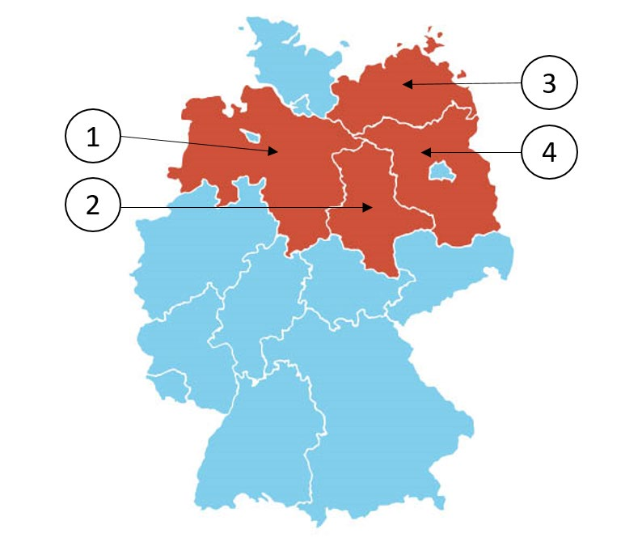
- 1
- 2
- 3
- 4
BB-09
PDF page 131
Wie nennt man die Regierungschefin/den Regierungschef in Brandenburg?
- Erste Ministerin/Erster Minister
- Premierministerin/Premierminister
- Bürgermeisterin/Bürgermeister
- Ministerpräsidentin/Ministerpräsident
BB-10
PDF page 131
Welche Ministerin/welchen Minister hat Brandenburg nicht?
- Justizministerin/Justizminister
- Außenministerin/Außenminister
- Finanzministerin/Finanzminister
- Innenministerin/Innenminister
HB-01
PDF page 132
Welches Wappen gehört zur Freien Hansestadt Bremen?


- Bild 1
- Bild 2
- Bild 3
- Bild 4
HB-02
PDF page 132
Welches ist ein Stadtteil von Bremen?
- Altona
- Hemelingen
- Pankow
- Babelsberg
HB-03
PDF page 133
Für wie viele Jahre wird das Landesparlament in Bremen gewählt?
- 3
- 4
- 5
- 6
HB-04
PDF page 133
Ab welchem Alter darf man in Bremen bei den Wahlen zur Bürgerschaft (Landtag) wählen?
- 14
- 16
- 18
- 20
HB-05
PDF page 133
Welche Farben hat die Landesflagge von Bremen?
- blau-weiß-rot
- rot-weiß
- grün-weiß-rot
- schwarz-gold
HB-06
PDF page 134
Wo können Sie sich in Bremen über politische Themen informieren?
- beim Ordnungsamt der Gemeinde
- bei der Landeszentrale für politische Bildung
- bei den Kirchen
- bei der Verbraucherzentrale
HB-07
PDF page 134
Was ist ein deutscher Stadtstaat?
- Bremen
- München
- Frankfurt
- Erfurt
HB-08
PDF page 135
Welches Bundesland ist Bremen?
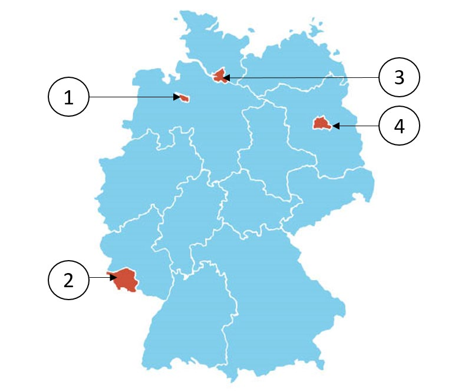
- 1
- 2
- 3
- 4
HB-09
PDF page 136
Wie nennt man die Regierungschefin/den Regierungschef des Stadtstaates Bremen?
- Ministerpräsidentin/Ministerpräsident
- Erste Bürgermeisterin/Erster Bürgermeister
- Präsidentin/Präsident des Senates
- Regierende Bürgermeisterin/Regierender Bürgermeister
HB-10
PDF page 136
Welche Senatorin/welchen Senator hat Bremen nicht?
- Senatorin/Senator für Außenbeziehungen
- Finanzsenatorin/Finanzsenator
- Justizsenatorin/Justizsenator
- Innensenatorin/Innensenator
HH-01
PDF page 137
Welches Wappen gehört zur Freien und Hansestadt Hamburg?

- Bild 1
- Bild 2
- Bild 3
- Bild 4
HH-02
PDF page 137
Welches ist ein Bezirk von Hamburg?
- Altona
- Hemelingen
- Pankow
- Mecklenburgische Seenplatte
HH-03
PDF page 138
Für wie viele Jahre wird das Landesparlament in Hamburg gewählt?
- 3
- 4
- 5
- 6
HH-04
PDF page 138
Ab welchem Alter darf man in Hamburg bei Kommunalwahlen (Wahl der Bezirksversammlungen) wählen?
- 14
- 16
- 18
- 20
HH-05
PDF page 138
Welche Farben hat die Landesflagge von Hamburg?
- blau-weiß-rot
- weiß-rot
- grün-weiß-rot
- schwarz-gelb
HH-06
PDF page 139
Wo können Sie sich in Hamburg über politische Themen informieren?
- beim Ordnungsamt der Gemeinde
- bei der Verbraucherzentrale
- bei den Kirchen
- bei der Landeszentrale für politische Bildung
HH-07
PDF page 139
Welches Bundesland ist ein Stadtstaat?
- Hamburg
- Sachsen
- Bayern
- Thüringen
HH-08
PDF page 140
Welches Bundesland ist Hamburg?
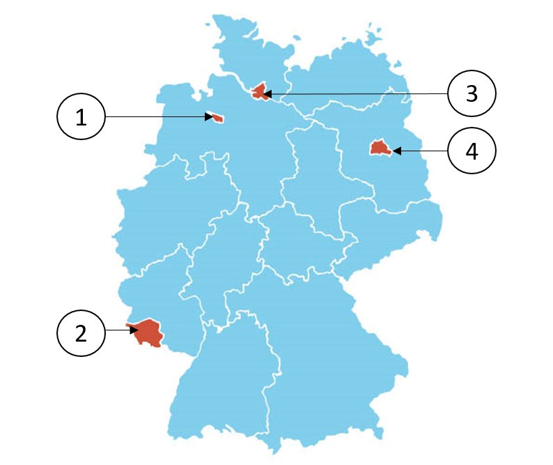
- 1
- 2
- 3
- 4
HH-09
PDF page 141
Wie nennt man die Regierungschefin/den Regierungschef des Stadtstaates Hamburg?
- Ministerpräsidentin/Ministerpräsident
- Erste Bürgermeisterin/Erster Bürgermeister
- Regierende Senatorin/Regierender Senator
- Oberbürgermeisterin/Oberbürgermeister
HH-10
PDF page 141
Welche Senatorin/welchen Senator hat Hamburg nicht?
- Justizsenatorin/Justizsenator
- Senatorin/Senator für Außenbeziehungen
- Finanzsenatorin/Finanzsenator
- Innensenatorin/Innensenator
HE-01
PDF page 142
Welches Wappen gehört zum Bundesland Hessen?


- Bild 1
- Bild 2
- Bild 3
- Bild 4
HE-02
PDF page 142
Welches ist ein Landkreis in Hessen?
- Ammerland
- Altötting
- Prignitz
- Main-Taunus-Kreis
HE-03
PDF page 143
Für wie viele Jahre wird der Landtag in Hessen gewählt?
- 3
- 4
- 5
- 6
HE-04
PDF page 143
Ab welchem Alter darf man in Hessen bei Kommunalwahlen wählen?
- 14
- 16
- 18
- 20
HE-05
PDF page 143
Welche Farben hat die Landesflagge von Hessen?
- blau-weiß-rot
- rot-weiß
- schwarz-gold
- grün-weiß-rot
HE-06
PDF page 144
Wo können Sie sich in Hessen über politische Themen informieren?
- bei der Landeszentrale für politische Bildung
- bei der Verbraucherzentrale
- beim Ordnungsamt der Gemeinde
- bei den Kirchen
HE-07
PDF page 144
Die Landeshauptstadt von Hessen heißt ...
- Kassel.
- Darmstadt.
- Frankfurt.
- Wiesbaden.
HE-08
PDF page 145
Welches Bundesland ist Hessen?
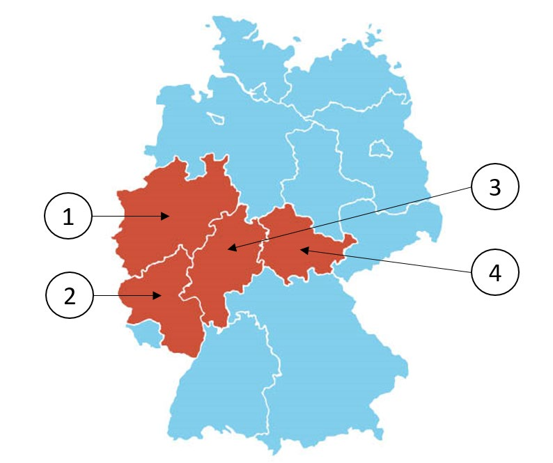
- 1
- 2
- 3
- 4
HE-09
PDF page 146
Wie nennt man die Regierungschefin/den Regierungschef in Hessen?
- Erste Ministerin/Erster Minister
- Premierministerin/Premierminister
- Bürgermeisterin/Bürgermeister
- Ministerpräsidentin/Ministerpräsident
HE-10
PDF page 146
Welche Ministerin/welchen Minister hat Hessen nicht?
- Justizministerin/Justizminister
- Außenministerin/Außenminister
- Finanzministerin/Finanzminister
- Innenministerin/Innenminister
MV-01
PDF page 147
Welches Wappen gehört zum Bundesland Mecklenburg-Vorpommern?


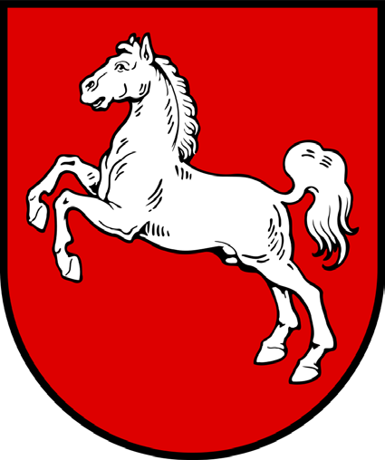
- Bild 1
- Bild 2
- Bild 3
- Bild 4
MV-02
PDF page 147
Welches ist ein Landkreis in Mecklenburg-Vorpommern?
- Prignitz
- Mecklenburgische Seenplatte
- Vogtlandkreis
- Rhein-Sieg-Kreis
MV-03
PDF page 148
Für wie viele Jahre wird der Landtag in Mecklenburg-Vorpommern gewählt?
- 3
- 4
- 5
- 6
MV-04
PDF page 148
Ab welchem Alter darf man in Mecklenburg-Vorpommern bei Kommunalwahlen wählen?
- 14
- 16
- 18
- 20
MV-05
PDF page 148
Welche Farben hat die Landesflagge von Mecklenburg-Vorpommern?
- schwarz-rot-gold
- blau-weiß-gelb-rot
- grün-weiß-rot
- schwarz-gelb
MV-06
PDF page 149
Wo können Sie sich in Mecklenburg-Vorpommern über politische Themen informieren?
- bei der Landeszentrale für politische Bildung
- bei den Kirchen
- beim Ordnungsamt der Gemeinde
- bei der Verbraucherzentrale
MV-07
PDF page 149
Die Landeshauptstadt von Mecklenburg-Vorpommern heißt ...
- Greifswald.
- Schwerin.
- Rostock.
- Wismar.
MV-08
PDF page 150
Welches Bundesland ist Mecklenburg-Vorpommern?
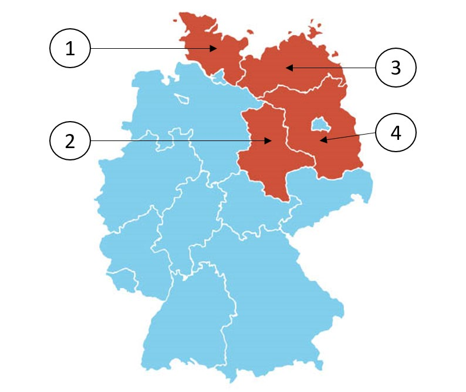
- 1
- 2
- 3
- 4
MV-09
PDF page 151
Wie nennt man die Regierungschefin/den Regierungschef in Mecklenburg-Vorpommern?
- Erste Ministerin/Erster Minister
- Premierministerin/Premierminister
- Bürgermeisterin/Bürgermeister
- Ministerpräsidentin/Ministerpräsident
MV-10
PDF page 151
Welche Ministerin/welchen Minister hat Mecklenburg-Vorpommern nicht?
- Justizministerin/Justizminister
- Außenministerin/Außenminister
- Finanzministerin/Finanzminister
- Innenministerin/Innenminister
NI-02
PDF page 152
Welches ist ein Landkreis in Niedersachsen?
- Ammerland
- Rhein-Sieg-Kreis
- Nordfriesland
- Vogtlandkreis
NI-03
PDF page 153
Für wie viele Jahre wird der Landtag in Niedersachsen gewählt?
- 3
- 4
- 5
- 6
NI-04
PDF page 153
Ab welchem Alter darf man in Niedersachsen bei Kommunalwahlen wählen?
- 14
- 16
- 18
- 20
NI-05
PDF page 153
Welche Farben hat die Landesflagge von Niedersachsen?
- weiß-blau
- schwarz-rot-gold
- schwarz-gelb
- blau-weiß-rot
NI-06
PDF page 154
Wo können Sie sich in Niedersachsen über politische Themen informieren?
- bei der Landeszentrale für politische Bildung
- beim Ordnungsamt der Gemeinde
- bei der Verbraucherzentrale
- bei den Kirchen
NI-07
PDF page 154
Die Landeshauptstadt von Niedersachsen heißt ...
- Hannover.
- Braunschweig.
- Wolfsburg.
- Osnabrück.
NI-08
PDF page 155
Welches Bundesland ist Niedersachsen?
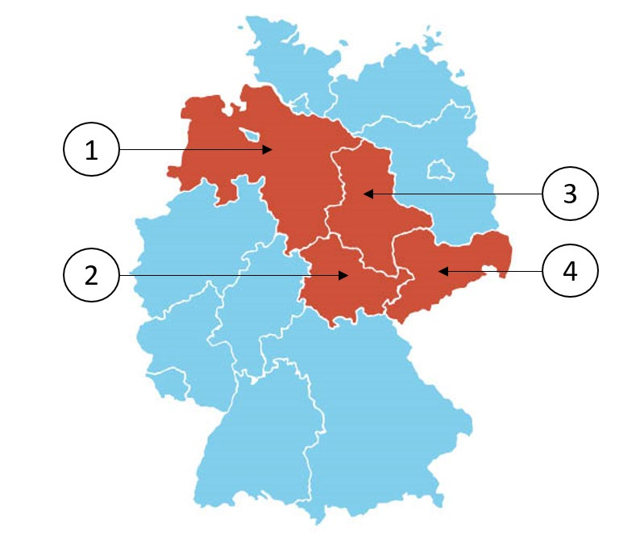
- 1
- 2
- 3
- 4
NI-09
PDF page 156
Wie nennt man die Regierungschefin/den Regierungschef in Niedersachsen?
- Erste Ministerin/Erster Minister
- Premierministerin/Premierminister
- Bürgermeisterin/Bürgermeister
- Ministerpräsidentin/Ministerpräsident
NI-10
PDF page 156
Welche Ministerin/welchen Minister hat Niedersachsen nicht?
- Justizministerin/Justizminister
- Außenministerin/Außenminister
- Finanzministerin/Finanzminister
- Innenministerin/Innenminister
NW-01
PDF page 157
Welches Wappen gehört zum Bundesland Nordrhein-Westfalen?
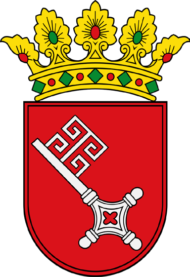


- Bild 1
- Bild 2
- Bild 3
- Bild 4
NW-02
PDF page 157
Welches ist ein Landkreis in Nordrhein-Westfalen?
- Ammerland
- Rhein-Sieg-Kreis
- Nordfriesland
- Vogtlandkreis
NW-03
PDF page 158
Für wie viele Jahre wird der Landtag in Nordrhein-Westfalen gewählt?
- 3
- 4
- 5
- 6
NW-04
PDF page 158
Ab welchem Alter darf man in Nordrhein-Westfalen bei Kommunalwahlen wählen?
- 14
- 16
- 18
- 20
NW-05
PDF page 158
Welche Farben hat die Landesflagge von Nordrhein-Westfalen?
- rot-weiß
- grün-weiß-rot
- schwarz-gold
- blau-weiß-rot
NW-06
PDF page 159
Wo können Sie sich in Nordrhein-Westfalen über politische Themen informieren?
- bei den Kirchen
- beim Ordnungsamt der Gemeinde
- bei der Verbraucherzentrale
- bei der Landeszentrale für politische Bildung
NW-07
PDF page 159
Die Landeshauptstadt von Nordrhein-Westfalen heißt ...
- Köln.
- Bonn.
- Düsseldorf.
- Dortmund.
NW-08
PDF page 160
Welches Bundesland ist Nordrhein-Westfalen?
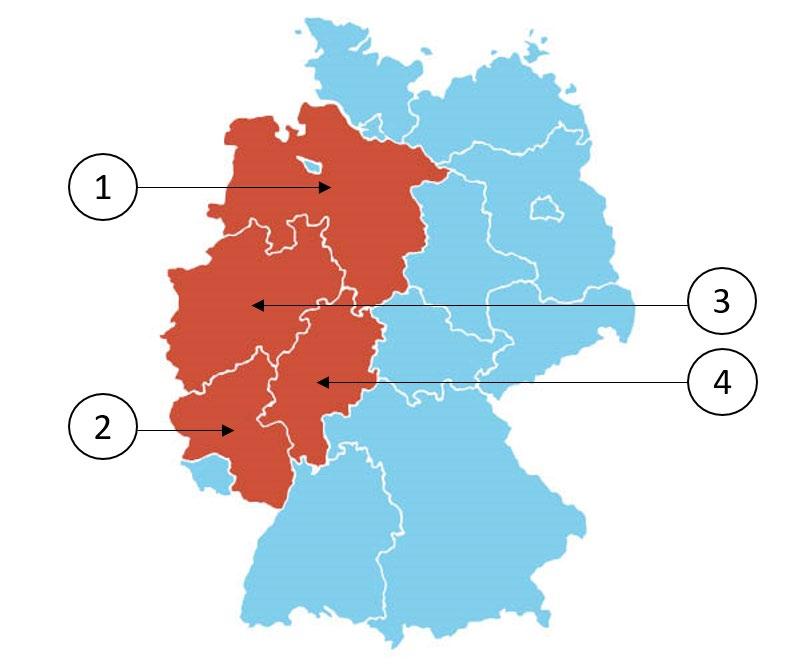
- 1
- 2
- 3
- 4
NW-09
PDF page 161
Wie nennt man die Regierungschefin/den Regierungschef in Nordrhein-Westfalen?
- Erste Ministerin/Erster Minister
- Premierministerin/Premierminister
- Bürgermeisterin/Bürgermeister
- Ministerpräsidentin/Ministerpräsident
NW-10
PDF page 161
Welche Ministerin/welchen Minister hat Nordrhein-Westfalen nicht?
- Justizministerin/Justizminister
- Außenministerin/Außenminister
- Finanzministerin/Finanzminister
- Innenministerin/Innenminister
RP-01
PDF page 162
Welches Wappen gehört zum Bundesland Rheinland-Pfalz?


- Bild 1
- Bild 2
- Bild 3
- Bild 4
RP-02
PDF page 162
Welches ist ein Landkreis in Rheinland-Pfalz?
- Westerwaldkreis
- Altötting
- Emsland
- Prignitz
RP-03
PDF page 163
Für wie viele Jahre wird der Landtag in Rheinland-Pfalz gewählt?
- 3
- 4
- 5
- 6
RP-04
PDF page 163
Ab welchem Alter darf man in Rheinland-Pfalz bei Kommunalwahlen wählen?
- 14
- 16
- 18
- 20
RP-05
PDF page 163
Welche Farben hat die Landesflagge von Rheinland-Pfalz?
- weiß-rot
- schwarz-rot-gold
- schwarz-gelb
- grün-weiß-rot
RP-06
PDF page 164
Wo können Sie sich in Rheinland-Pfalz über politische Themen informieren?
- bei den Kirchen
- bei der Verbraucherzentrale
- beim Ordnungsamt der Gemeinde
- bei der Landeszentrale für politische Bildung
RP-07
PDF page 164
Die Landeshauptstadt von Rheinland-Pfalz heißt ...
- Mainz.
- Kaiserslautern.
- Ludwigshafen.
- Koblenz.
RP-08
PDF page 165
Welches Bundesland ist Rheinland-Pfalz?
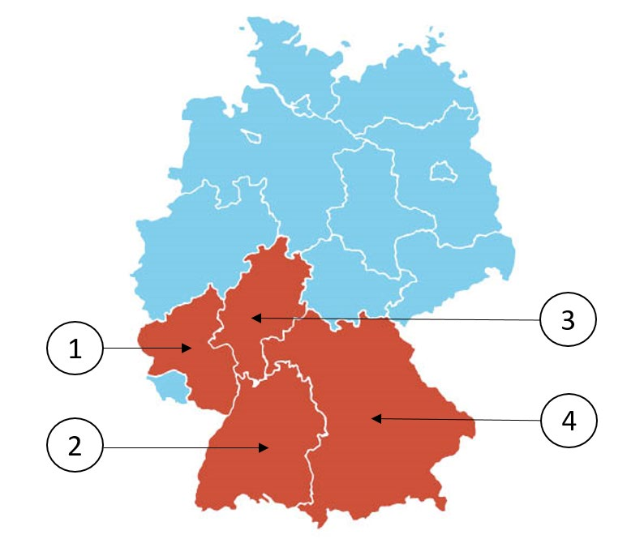
- 1
- 2
- 3
- 4
RP-09
PDF page 166
Wie nennt man die Regierungschefin/den Regierungschef in Rheinland-Pfalz?
- Erste Ministerin/Erster Minister
- Premierministerin/Premierminister
- Bürgermeisterin/Bürgermeister
- Ministerpräsidentin/Ministerpräsident
RP-10
PDF page 166
Welche Ministerin/welchen Minister hat Rheinland-Pfalz nicht?
- Justizministerin/Justizminister
- Außenministerin/Außenminister
- Finanzministerin/Finanzminister
- Innenministerin/Innenminister
SL-01
PDF page 167
Welches Wappen gehört zum Bundesland Saarland?


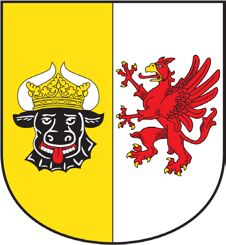

- Bild 1
- Bild 2
- Bild 3
- Bild 4
SL-02
PDF page 167
Welches ist ein Landkreis im Saarland?
- Mecklenburgische Seenplatte
- Altötting
- Neunkirchen
- Rhein-Sieg-Kreis
SL-03
PDF page 168
Für wie viele Jahre wird der Landtag des Saarlandes gewählt?
- 3
- 4
- 5
- 6
SL-04
PDF page 168
Ab welchem Alter darf man im Saarland bei Kommunalwahlen wählen?
- 14
- 16
- 18
- 20
SL-05
PDF page 168
Welche Farben hat die Landesflagge des Saarlandes?
- weiß-blau
- schwarz-rot-gold
- schwarz-gelb
- grün-weiß-rot
SL-06
PDF page 169
Wo können Sie sich im Saarland über politische Themen informieren?
- bei den Kirchen
- bei der Landeszentrale für politische Bildung
- bei der Verbraucherzentrale
- beim Ordnungsamt der Gemeinde
SL-07
PDF page 169
Die Landeshauptstadt des Saarlandes heißt ...
- Neunkirchen.
- Homburg.
- Saarbrücken.
- Völklingen.
SL-08
PDF page 170
Welches Bundesland ist das Saarland?
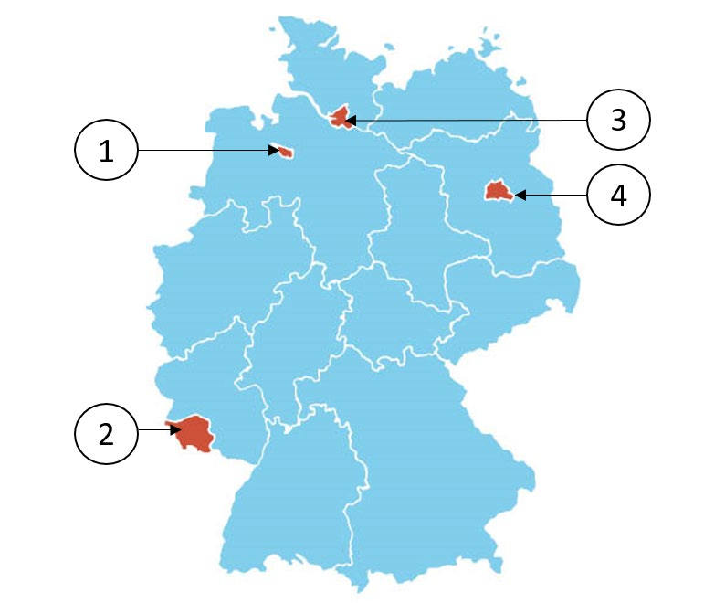
- 1
- 2
- 3
- 4
SL-09
PDF page 171
Wie nennt man die Regierungschefin/den Regierungschef des Saarlandes?
- Erste Ministerin/Erster Minister
- Premierministerin/Premierminister
- Bürgermeisterin/Bürgermeister
- Ministerpräsidentin/Ministerpräsident
SL-10
PDF page 171
Welche Ministerin/welchen Minister hat das Saarland nicht?
- Justizministerin/Justizminister
- Außenministerin/Außenminister
- Finanzministerin/Finanzminister
- Innenministerin/Innenminister
SN-01
PDF page 172
Welches Wappen gehört zum Freistaat Sachsen?


- Bild 1
- Bild 2
- Bild 3
- Bild 4
SN-02
PDF page 172
Welches ist ein Landkreis in Sachsen?
- Vogtlandkreis
- Altötting
- Uckermark
- Nordfriesland
SN-03
PDF page 173
Für wie viele Jahre wird der Landtag in Sachsen gewählt?
- 3
- 4
- 5
- 6
SN-04
PDF page 173
Ab welchem Alter darf man in Sachsen bei Kommunalwahlen wählen?
- 14
- 16
- 18
- 20
SN-05
PDF page 173
Welche Farben hat die Landesflagge von Sachsen?
- blau-weiß-rot
- weiß-grün
- grün-weiß-rot
- schwarz-gelb
SN-06
PDF page 174
Wo können Sie sich in Sachsen über politische Themen informieren?
- bei der Landeszentrale für politische Bildung
- beim Ordnungsamt der Gemeinde
- bei den Kirchen
- bei der Verbraucherzentrale
SN-07
PDF page 174
Die Landeshauptstadt von Sachsen heißt ...
- Leipzig.
- Dresden.
- Chemnitz.
- Zwickau.
SN-08
PDF page 175
Welches Bundesland ist Sachsen?
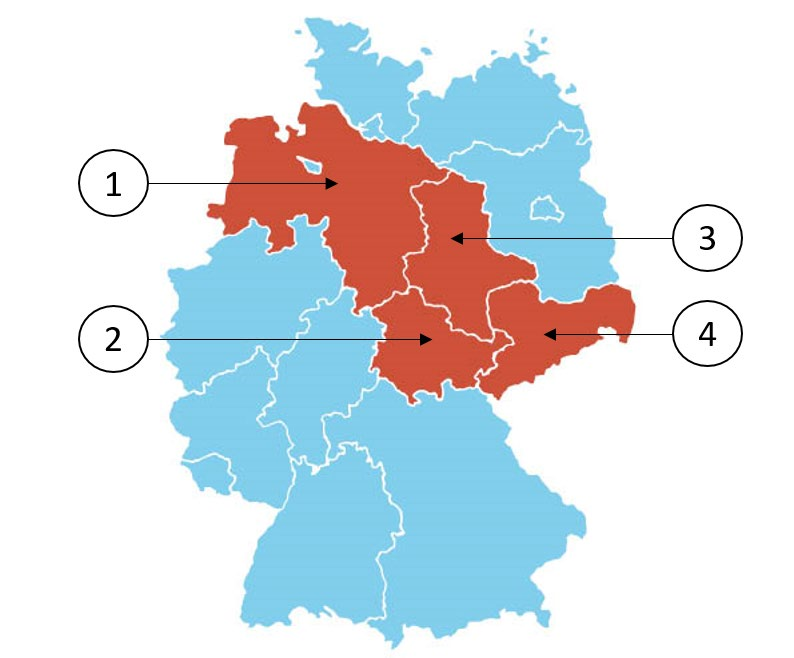
- 1
- 2
- 3
- 4
SN-09
PDF page 176
Wie nennt man die Regierungschefin/den Regierungschef in Sachsen?
- Erste Ministerin/Erster Minister
- Premierministerin/Premierminister
- Bürgermeisterin/Bürgermeister
- Ministerpräsidentin/Ministerpräsident
SN-10
PDF page 176
Welche Ministerin/welchen Minister hat Sachsen nicht?
- Justizministerin/Justizminister
- Außenministerin/Außenminister
- Finanzministerin/Finanzminister
- Innenministerin/Innenminister
ST-01
PDF page 177
Welches Wappen gehört zum Bundesland Sachsen-Anhalt?


- Bild 1
- Bild 2
- Bild 3
- Bild 4
ST-02
PDF page 177
Welches ist ein Landkreis in Sachsen-Anhalt?
- Ammerland
- Altötting
- Uckermark
- Börde
ST-03
PDF page 178
Für wie viele Jahre wird der Landtag in Sachsen-Anhalt gewählt?
- 3
- 4
- 5
- 6
ST-04
PDF page 178
Ab welchem Alter darf man in Sachsen-Anhalt bei Kommunalwahlen wählen?
- 14
- 16
- 18
- 20
ST-05
PDF page 178
Welche Farben hat die Landesflagge von Sachsen-Anhalt?
- blau-weiß-rot
- gelb-schwarz
- grün-weiß-rot
- weiß-rot
ST-06
PDF page 179
Wo können Sie sich in Sachsen-Anhalt über politische Themen informieren?
- bei den Kirchen
- bei der Landeszentrale für politische Bildung
- beim Ordnungsamt der Gemeinde
- bei der Verbraucherzentrale
ST-07
PDF page 179
Die Landeshauptstadt von Sachsen-Anhalt heißt ...
- Halle.
- Dessau.
- Magdeburg.
- Wittenberg.
ST-08
PDF page 180
Welches Bundesland ist Sachsen-Anhalt?
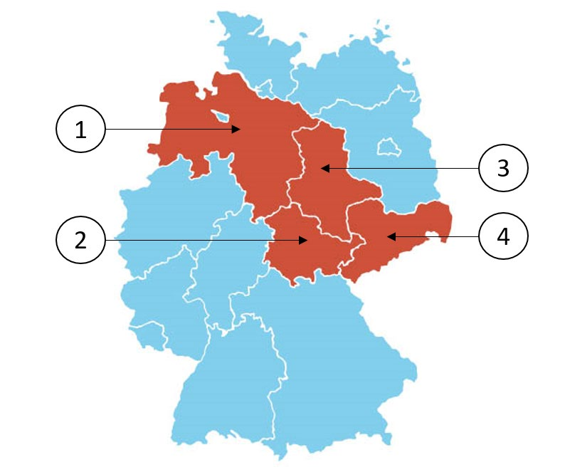
- 1
- 2
- 3
- 4
ST-09
PDF page 181
Wie nennt man die Regierungschefin/den Regierungschef in Sachsen-Anhalt?
- Erste Ministerin/Erster Minister
- Premierministerin/Premierminister
- Bürgermeisterin/Bürgermeister
- Ministerpräsidentin/Ministerpräsident
ST-10
PDF page 181
Welche Ministerin/welchen Minister hat Sachsen-Anhalt nicht?
- Justizministerin/Justizminister
- Außenministerin/Außenminister
- Finanzministerin/Finanzminister
- Innenministerin/Innenminister
SH-01
PDF page 182
Welches Wappen gehört zum Bundesland Schleswig-Holstein?

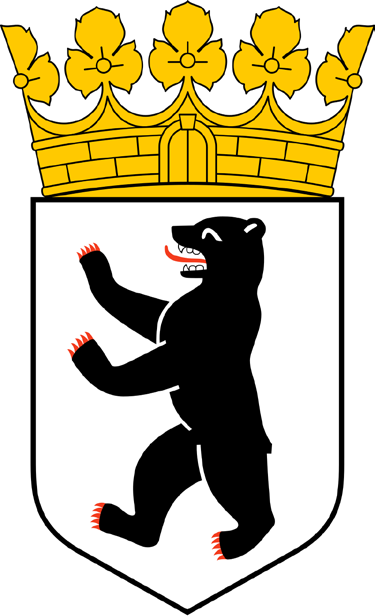


- Bild 1
- Bild 2
- Bild 3
- Bild 4
SH-02
PDF page 182
Welches ist ein Landkreis in Schleswig-Holstein?
- Ammerland
- Mecklenburgische Seenplatte
- Nordfriesland
- Rhein-Sieg-Kreis
SH-03
PDF page 183
Für wie viele Jahre wird der Landtag in Schleswig-Holstein gewählt?
- 3
- 4
- 5
- 6
SH-04
PDF page 183
Ab welchem Alter darf man in Schleswig-Holstein bei Kommunalwahlen wählen?
- 14
- 16
- 18
- 20
SH-05
PDF page 183
Welche Farben hat die Landesflagge von Schleswig-Holstein?
- weiß-blau
- blau-weiß-rot
- weiß-rot
- grün-weiß-rot
SH-06
PDF page 184
Wo können Sie sich in Schleswig-Holstein über politische Themen informieren?
- bei der Verbraucherzentrale
- beim Ordnungsamt der Gemeinde
- beim / bei der Landesbeauftragten für politische Bildung
- bei den Kirchen
SH-07
PDF page 184
Die Landeshauptstadt von Schleswig-Holstein heißt ...
- Husum.
- Flensburg.
- Lübeck.
- Kiel.
SH-08
PDF page 185
Welches Bundesland ist Schleswig-Holstein?
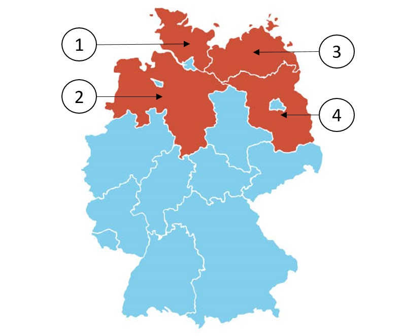
- 1
- 2
- 3
- 4
SH-09
PDF page 186
Wie nennt man die Regierungschefin/den Regierungschef in Schleswig-Holstein?
- Erste Ministerin/Erster Minister
- Premierministerin/Premierminister
- Bürgermeisterin/Bürgermeister
- Ministerpräsidentin/Ministerpräsident
SH-10
PDF page 186
Welche Ministerin/welchen Minister hat Schleswig-Holstein nicht?
- Justizministerin/Justizminister
- Außenministerin/Außenminister
- Finanzministerin/Finanzminister
- Innenministerin/Innenminister
TH-02
PDF page 187
Welches ist ein Landkreis in Thüringen?
- Ammerland
- Altötting
- Nordfriesland
- Wartburgkreis
TH-03
PDF page 188
Für wie viele Jahre wird der Landtag in Thüringen gewählt?
- 3
- 4
- 5
- 6
TH-04
PDF page 188
Ab welchem Alter darf man in Thüringen bei Kommunalwahlen wählen?
- 14
- 16
- 18
- 20
TH-05
PDF page 188
Welche Farben hat die Landesflagge von Thüringen?
- blau-weiß-rot
- weiß-rot
- grün-weiß-rot
- schwarz-gold
TH-06
PDF page 189
Wo können Sie sich in Thüringen über politische Themen informieren?
- bei den Kirchen
- bei der Verbraucherzentrale
- bei der Landeszentrale für politische Bildung
- beim Ordnungsamt der Gemeinde
TH-07
PDF page 189
Die Landeshauptstadt von Thüringen heißt ...
- Eisenach.
- Erfurt.
- Gera.
- Jena.
TH-08
PDF page 190
Welches Bundesland ist Thüringen?
- 1
- 2
- 3
- 4
TH-09
PDF page 191
Wie nennt man die Regierungschefin/den Regierungschef in Thüringen?
- Erste Ministerin/Erster Minister
- Premierministerin/Premierminister
- Bürgermeisterin/Bürgermeister
- Ministerpräsidentin/Ministerpräsident
TH-10
PDF page 191
Welche Ministerin/welchen Minister hat Thüringen nicht?
- Justizministerin/Justizminister
- Außenministerin/Außenminister
- Finanzministerin/Finanzminister
- Innenministerin/Innenminister